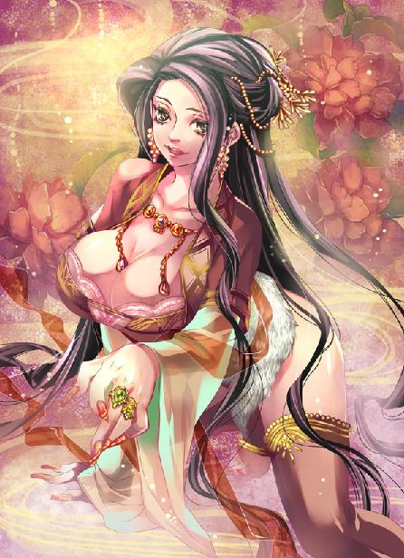
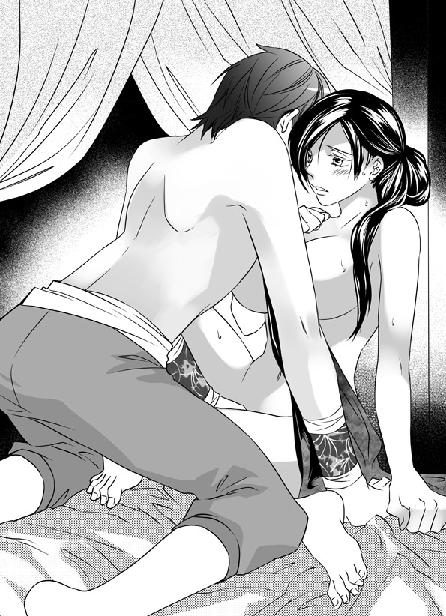
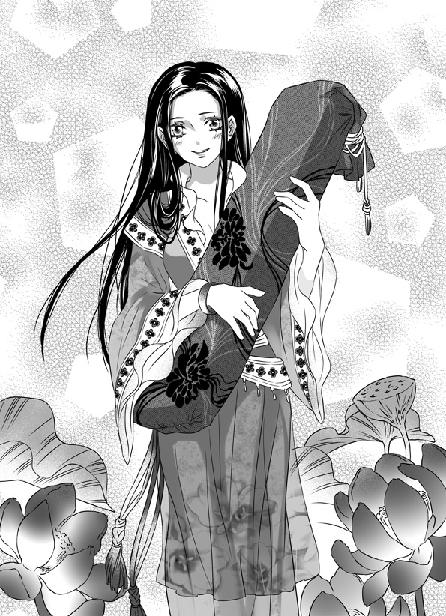

第16集·鹰愁绝峪
建康篇（4/8）
出版日期：2010-11-12
【本集内容简介】
终于顺顺当当吃下卓云君这美人教御，程宗扬正自志得意满，却没想到卧房里正有头九尾狐狸等着自己……
程宗扬本以为远离五原城就可逃出苏妲己的魔掌，但如今她也来到建康，甚至，在不知情的状况下，再次与她结怨……
舍不得饵套不了狼，为了套出佛窟寺内的秘密，萧遥逸不只以身为饵，还拉上了建康九大世家的贵胄子弟一同入瓮，究竟是萧程二人的长线钓了大鱼，还是佛窟寺主谋瓮中捉了巨鳖？
※ ※ ※ ※ ※

封面人物：苏妲己

插图：卓云君

插图：小紫
晋都，建康。玉鸡巷。
一声沉闷的雷鸣响过，大雨倾盆而下。雨水顺着屋檐，垂下成行的细流，园中的花树在暴雨冲刷下不住摇曳，无数红黄粉白的花瓣零落坠入沟渠。
一根铜簪伸出，细细的簪尾在油灯中拨了几下，灯光跳动着变得明亮起来。
闪烁的灯光下，一个女子赤条条躺在发黄的竹榻上，她化着浓妆的面孔姿容秾艳，但厚厚的脂粉仍遮不住她苍白的脸色。
乌亮的长发被冷汗打湿，一缕缕披散开来，细致的眉峰因为痛楚而蹙在一起，艳红的唇角微微抖动着，神情凄痛。
“回……回妈妈……女儿……女儿落红了……”
那女子臀部依在榻旁，双腿低垂，白腻的肉体毫不设防地敞露着。一个涂着厚粉的妇人立在她敞开的腿间，腰下伸出一根白檀木制成的圆棒，像交媾一样直挺挺插在那女子两腿之间，白色的棒身被鲜血染红。
那女子紧紧咬住红唇，双手抓住竹榻边缘，下体柔艳的蜜穴被淫具侵入，软腻的阴唇夹住棒身微微抽动着，穴中溢出一缕殷红的血痕。
“乖女儿，”那妇人讥诮道：“你说什么？再说一遍。”
榻上熟艳的女子美目迸出泪花，强忍着痛楚道：“回妈妈……女儿……女儿落红……”
“失过身的贱货，还充什么黄花闺女？”妇人拿起油灯，冷笑道：“把身子张开，让娘看看是不是真的。”
那女子羞痛地按住小腹，接着双腿被那妇人拉开，受创的蜜穴绽露出来。
妇人刚把油灯递来，一只手突然攀上她肩头，毫不客气地把她拽到一边。
那根白檀木制成的淫具“叽”的一声从蜜穴脱出，带出几滴鲜红的血迹。
程宗扬不知何时闯了进来，张大嘴巴盯着榻上落红的女子。那妇人气恼地抬起头，声音变得清脆动听，“大笨瓜！你做什么！”
程宗扬怪叫道：“死丫头，玩得太过了吧？没看到她是处女啊！”
“处女有什么了不起的？一会儿她就不是了。”
“少啰嗦，她的处女是我的。”
“才不要！说好是我先做！”
卓云君看着争吵的男女，眼神一片茫然，片刻后，忽然发出一声尖叫：“是你！是你！”
“废话！”程宗扬没好气地说：“当然是我！死丫头，别胡闹。卓教御这么漂亮的身子，年纪都够当你娘了，竟然还是处女，你这么给人家破处，太残忍了吧？”
小紫皱起鼻子，“你用肉棒就不残忍了？虚伪！”
卓云君挣扎着抱住身体，一边发出羞惧交加的尖叫。
煮熟的鸭子还怕飞了不成？程宗扬没有理她，和小紫商量道：“大不了我给你十个铜铢。”
小紫考虑了一下，“二十个。处女翻倍！”
“最多十五个！”程宗扬叫道：“她处女都被你干了一半了，起码打个五折吧？”
小紫翘起鼻尖哼了一声，“便宜你了。”
卓云君看着那个年轻人一五一十数了十五枚铜铢，递给化过装的少女。她再傻，这时也知道受到戏弄，不禁羞愧欲死。
拿到钱，小紫立刻放手。程宗扬扭头笑道：“卓教御，我钱都掏了，你还不乖乖摆好姿势让我来嫖？”
卓云君尖叫道：“你们这对恶棍！”
“鬼叫个屁啊！”程宗扬毫不客气地呵斥一声，说道：“你自己答应当婊子的，我记得你连祖师爷都拜过了吧？这会儿想反悔已经晚了！管事的，还不管管你手下的婊子！”
那个粗鄙妇人露出少女般娇俏的笑容，一手拿起门闩。
卓云君已经吃过无数苦头，脸色一下变得雪白。
程宗扬抓住她白光光的双腿，两臂一张，朝两边拉开。美妇发出一声痛楚的尖叫，被鲜血染红的玉户像红梅一般，在雪白的股间绽开。
小紫微微抬起门闩，卓云君身子触电般一抖，失声道：“不要打！”
小紫摇着门闩呵哄道：“那你可要乖乖听话哦。”
“好了，只要听话就不打你。”程宗扬摆弄着她的身体，像垂涎欲滴的大色狼一样淫笑道：“大美人儿，快点！我已经很兴奋了！”
卓云君急促地吸了几口气，鼓起最后一丝勇气，颤声道：“不要……不要辱我……”
卓云君两腿被他抓在手中，仿佛被铁箍焊死，用尽力气也无法挣动。
望着他野兽般充满肉欲的眼神，卓云君最后一丝勇气也消失无踪。她两手掩在腹下，眼角滚出泪珠，摇头泣道：“放过我……求你放过我吧……”
程宗扬大吃一惊，“死丫头，我是不是听错了？卓教御在求我？妈的，我还以为卓教御会一脸冷笑地让我干完，然后啐我一脸，说句‘老娘就当疯狗咬了一口’之类的狠话呢。”
小紫探过身，抚摸着美妇满是泪珠的玉颊，嘻笑道：“人家的乖女儿才不会呢。是不是？”
卓云君哽咽着摇了摇头。
“就在几天前，这位卓教御还拿把剑放在我脖子上，恶狠狠地要把我的喉咙切开。那模样又威风又杀气，我现在想起来还吓得尿裤子……天地良心，我那会儿刚救过她啊！”程宗扬抬起脖子，冷冰冰笑道：“卓教御，这件事你还有印象吧？”
卓云君哭泣道：“我错了……求你们放过我吧……”
程宗扬放开手，卓云君一双玉腿猛地合拢，牵动到下体的伤痛，不禁痛叫一声。
程宗扬收起冷笑，一脸温和地说道：“别傻了。我放了你，你敢出去吗？你们太乙真宗可比我狠多了。”
卓云君抱住身体，浑身战栗了一下。
程宗扬道：“卓教御，其实你远没有看起来那么有勇气。这么一个小丫头就让你服服贴贴，如果落到你那些同门手里……这会儿让你吃屎你都肯。你信不信？”
小紫认真道：“吃屎一点都不好玩。我要是你师兄，就把你扒光衣服关到笼子里，让你的弟子都来看。”
卓云君无法克制地颤抖起来。
太乙真宗六位教御，蔺采泉、商乐轩与自己向来不合，如今双方索性连最后一层面纱也撕破，彼此视为仇雠，再没有转圜的余地。齐放鹤已死，他的门人也视自己为仇敌。林之澜门下良莠不齐，未必能帮得到自己。夙未央又远走塞外。
自己门下弟子稀少，无力与他们对抗。如果落到他们手中，以自己的姿色和双方仇怨，必定是生不如死。
程宗扬看着她恐惧的表情，露出同情的眼神，温言道：“我给你一个机会好不好？只要你能赚够一百金铢，不，一百枚银铢！我就放你离开，到时你想去哪里就去哪里。怎么样……哎哟！死丫头，干嘛踢我！”
“傻瓜！”小紫又踢了他一脚，“滥好人的大傻瓜！整天说要报仇，这会儿又装起好人来了。”
程宗扬气道：“你说怎么办？让我也像太乙真宗那个家伙，把她来个先奸后杀，大卸八块？”
“笨死你了！她武功已经被废，只要挑断她的脚筋、穿了她的琵琶骨，她就变成一个废人，你想玩多久就玩多久。玩腻了就割掉她的舌头，把她卖到娼窠里去。嘻嘻，小紫认识一个老鸨，像她这样的老女人，也能卖五个银铢呢。”
程宗扬张大嘴巴，过了会儿道：“丫头，是不是太过分了？”
小紫白了他一眼，“大笨瓜，你救过她一次，她还要杀你，等于欠了你两条命呢。只让她拿身体抵债，太便宜她了，只有你这种大笨瓜才会干！你要不想挑她的筋、穿她的骨，我还有个办法！”
“什么办法？”
小紫嘻笑道：“有一种情人蛊，给这个贱人下到身上，她就每天乖乖被你干，不然浑身都被蛊虫咬噬，痛不欲生。好玩吧？”
卓云君惊惧交加，望着恶毒的小女孩，一句话都说不出来。
程宗扬俯过身，在小紫耳边小声道：“很好！继续。”
说完他头一扬，凛然道：“休要多说！我程宗扬岂是那种灭绝人性的恶徒！卓教御，一百枚银铢答不答应，你一言可决！”
小紫眨了眨眼，朝他扮个鬼脸。
卓云君垂头沉默半晌，低声道：“我不接客。”
小紫挑起眉梢，凶巴巴道：“死娼妇！不接客你去哪里挣一百银铢！”
程宗扬过来打圆场，“这样吧，卓教御也是有身份的人，整天被人肏来肏去也不好看。咱们给卓教御留个面子，就接我这一个客人好了。嫖一次给你十个铜铢，如果逗得我高兴，还会翻倍打赏。运气好的话，一年多你就可以自由了。这个条件够优厚了吧？”
房舍门窗都用被褥遮住，雨声被隔在外面。忽然一声惊雷，震得屋瓦为之摇动。
美妇白滑的胴体哆嗦了一下，她低着头，按在股间的玉指下血迹宛然，神情又是痛悔又是羞惭。良久，她唇角抽动着，露出一个凄婉的笑容。
“好啊，她答应了。”小紫拍手笑道：“她既然在这里当妓女，以后就叫她云婊子好了。”
“我倒觉得美人儿更好听。”程宗扬大度地挥手，“无所谓啦，反正都是叫她没错。是不是，卓美人儿？”
卓云君勉强露出一丝笑意，“是，公子。”
小紫道：“你是奴隶，要叫主人。”
“叫主子吧。”程宗扬对卓云君说道：“你在这里混饭吃，一半是奴婢，一半是妓女，叫主子免得和别人混了。”
卓云君终于低下高傲的头颅，“是，主子。”
程宗扬往榻上一坐，拍了拍腿，“卓大美人儿，过来。”
美妓起身，赤条条坐在程宗扬怀中，让他搂住自己光洁的玉体。
看到这个孤傲的女子终于主动光着身子坐在自己怀里，说不得意那是假的。程宗扬仰天大笑三声，换来小紫一个大大的白眼，“大笨瓜！”
“喂，这种事你还要旁观？好奇心也太强了吧？”程宗扬板着脸道：“小心我一激动射错靶，就有你笑的了。”
“小气鬼！”小紫一甩帘子离开。
“死丫头，一点都不听话。”程宗扬搂住卓云君柔软的腰肢，“放松一点，我又不会吃了你。”
程宗扬一边说笑，一边抚摸美妓的肉体，“卓教御皮肤真好，又白又细……嘿嘿，在玄真观的时候，你只怕想不到，有一天自己会主动光着屁股坐在我怀里吧？”
“呀……”
卓云君低叫一声，那双白滑的玉腿被程宗扬分开。
“卓美人儿，你下边也很美啊。”
程宗扬把美妓推到榻上，把她的双腿用力拉开。白光光的大腿间，性器丰满而又滑腻，像馒头一样圆圆隆起。中间一条细软的肉缝儿在刚才的淫戏中被干得微微张开，几缕殷红的血迹从蜜穴溢出，沾在白美的玉户间，凄艳夺目。
自己好心救人，却被这个风姿如画的贱人反咬一口，差点连命都丢了。这口恶气已经憋了许久，现在终于等到这一天，让这贱人敞开美屄任自己观赏，心里不禁得意非凡。
程宗扬戏谑地扯了扯她下体柔顺的耻毛，美妓羞人的玉户软软张开，里面羞媚的蜜肉绽露出来，沾满处子的元红。
程宗扬把一条白绫放在她手里，然后挑了挑眉毛。卓云君明白过来，忍羞拿起白绫，将秘处的血迹一点点抹拭干净。
“卓大美人儿，刚才你干娘是不是已经把你的处女苞给开了？”
“紫妈妈只干了一半，里面……哦……”
美妓低叫一声，咬住朱唇，眉头蹙起。
一个硬梆梆的物体顶在股间，那只又硬又大的龟头挤进软腻的肉缝儿中，传来火热的气息，受创的蜜穴像被烫到似的一阵悸动。
“卓美人儿，我是你第一个男人。如果你乖乖的，说不定我也是你最后一个男人呢。”
程宗扬站在榻旁，嘻笑着按住卓云君的膝弯，阳具挺起，顶住她柔腻的蜜穴慢慢用力。
美妓腰肢弓起，小腹白皙的肌肤紧绷，丰腴的胴体又白又滑，散发出白瓷般的光泽。忽然她身体一颤，发出一声痛叫。
程宗扬奋力一挺，阳具长驱直入，深深干进美妓体内。火热的阳具铁棒般挤进充满弹性的腻穴中，不留丝毫缝隙，将她已经受创的处女膜彻底撞碎。
卓云君对痛楚的感觉比正常人要强烈数倍，下体撕裂的剧痛使她几乎昏厥，瞳孔瞬间失去光彩。
“好痛……呃……”
忽然胸前传来触电般酥麻的感觉，丰挺的美乳被年轻的主人抓在手中，揉捏得不住变形。程宗扬十指拿开，一手一个拿住她浑圆的乳球，像滚皮球一样来回揉动。美妓弹性十足的乳肉被压得扁扁的，温度迅速升高。
卓云君只觉双乳像要胀破一样，皮肤传来热辣辣的感觉，只有被他拿住把玩时，鼓胀的乳肉才略显轻松，灵活而有力的手指带来一波波酥爽的快感。下体的痛意似乎也不再那么强烈。美妓咬住红唇，白玉般的鼻翼微微鼓张着，双颊渐渐泛起桃红。
美人开苞，最诱人的就是这种羞痛媚态，尤其这种表情出现在一个熟艳的美妓脸上，更让人心花怒放。
程宗扬为的是出一口鸟气，又不是开善堂，当然用不着跟她客气，阳具奋力前顶，整个干进美妓穴内，叫道：“好爽！”
卓云君白滑的双腿张开，伸在程宗扬腰侧，雪白的双乳被他抓在手中捏得变形，丰隆的玉户被他压得扁扁的，与阳具肌肤相接。剧痛和羞耻使美妓迸出泪花，齿间发出吃痛的低叫。
阳具在狭紧的蜜腔中挺动，用力顶住她颤抖的花心。卓云君浑身一颤，被玉齿咬紧的红唇痛得收紧。
“你的处女穴很紧啊。”程宗扬在她体内用力挺动几下，一边笑道：“卓美人儿，被主子的肉棒开苞很爽吧？”
卓云君勉强点了点头，痛得一个字都说不出来。
“能给卓教御这么漂亮的大美人儿开苞，感觉真的很过瘾。”程宗扬把那幅染血的白绫扔在卓云君身上，“放在屁股下面，给你的处女血留个纪念。”
插在体内的阳具使卓云君无力反抗，只能含羞忍痛地抬起雪臀，把那条白绫放在臀下，对着溢血的秘处摊开。
“啊……啊啊……”
美妓躺在程宗扬身下，被他干得痛叫连声。怒胀的阳具毫不怜悯地在美妓的处女嫩穴中进出，每次拔出，都带出一串鲜红的血迹。
“卓婊子！想不到吧！我当时救你一命，你却反过来咬我，结果这会儿乖乖张开腿，让我给你的处女开苞。”
卓云君颤声叫道：“是我错了……求你轻一点……好痛……”
报复的感觉真的很爽！程宗扬意气风发地叫道：“贱奴！向我道歉！”
“啊！”卓云君痛叫一声，忍不住哭出声来，“对不起……都是奴婢的错……呜呜……”
“傻瓜！”程宗扬道：“你干下那样的坏事，应该求主子责罚！”
卓云君美目含泪，痛叫出声，“当日奴婢对主子恩将仇报……啊……请主子责罚……”
程宗扬抓住她双乳，一边用力戳弄她的蜜穴，一边叫道：“所以呢，我这会儿很爽，你这会儿很痛——这就对了！”
程宗扬不经意的一句却让卓云君浑身一震，她眼中透出异样的神情，说不出是后悔还是羞痛。
“哎，怎么了？”程宗扬停下来，摸了摸她的额头，“不会真的很痛吧？”
卓云君嘴角牵动，露出一丝苍白的笑容，“奴婢知道错了，请主子责罚。”说着她一手分开阴唇，“请用力……”
接下来，熟艳的美妓不再抗拒阳具的进入，她一边敞露秘处，让他肆意肏弄，一边顺从地向他道歉。温顺得让自己都觉得诧异。
阳具停在穴口，美妓柔声道：“请用力……”
程宗扬用力贯入，“叽咛”一声，肉棒捅进蜜穴深处，蜜腔内柔腻的嫩肉痛楚地收紧，一股鲜血从穴中溢出，将美妓娇美的艳穴染得殷红。
龟头重重撞上花心，卓云君白美的雪臀被干得抬起。她颦紧眉头，忍住下体的痛楚，吃力地说道：“请原谅……”
竹榻发出“咯吱咯吱”的声音，程宗扬每一次抽送，身下的美妓都敞开元红流溢的下体，迎合他的进出，一边婉转道歉。那种柔顺屈辱的样子，让程宗扬欲火愈发高涨。
程宗扬一手按住卓云君的小腹，一手揉捏着她一只雪乳。卓云君玉体横陈，如雪的肌肤上散发出浓浓的脂粉香气，媚艳动人。那支阳具在蜜穴中不停进出，用力研磨着穴内的腻肉。火热的肉棒被肉穴紧箍着，随着她双乳的颤动，腻穴渐渐渗出蜜汁，变得湿滑柔润。
不知干了多久，程宗扬手一紧，抓住美妓的乳房道：“卓美人儿，主子要射了！”
卓云君长发散乱，那具白生生的肉体痛得遍体冷汗，她挺起蜜穴，忍痛咬住唇瓣，望着程宗扬，直到他把久蓄的精液尽数喷射在自己体内。
程宗扬笑道：“卓美人儿人美屄也美，这十五个铜铢很值啊。”说着他身体往后一退，阳具带着鲜艳的落红，从蜜穴中滑出。
卓云君露出一个苍白的笑容，柔声道：“主子嫖得满意吗？”
※ ※ ※ ※ ※
看起来孤高冷傲的卓云君竟然说出这种妓女的言词，程宗扬不由一怔，旋即笑道：“卓大美人儿好乖，主子很满意。”
卓云君咬了咬唇，“多谢主子给奴婢开苞。”
程宗扬心里倒有些嘀咕，他摸了摸卓云君的额头，“你不会被干傻了吧？”
卓云君唇角抽动片刻，“奴婢想明白了，这都是奴婢应得的报应。”
“报应？”程宗扬道：“你们道家怎么讲起佛门的话来了？”
卓云君低声道：“太上有言：祸福无门，唯人自招，善恶之报，如影随形……”
卓云君念诵的是道家《太上感应篇》的首句，她垂下眼睛，“我对你恩将仇报，落到这番田地不过是咎由自取。心起于恶，恶虽未为，而凶神已随之。今日失身于你，冥冥中报应不爽。如果当初我一剑杀死你，说不定此时已经落到蔺贼手中，求死不能。”
程宗扬有些明白过来，“所以你就认命了？”
“命数如此，”卓云君静静说道：“一百银铢的欠债，我少不得要一一偿还给你。”
宗教果然是鸦片，幸好他不信。不过既然她都想明白了，他还客气什么？程宗扬放开按在卓云君小腹上的手掌，说道：“那好，卓美人儿，笑一个给主子看看！风骚一点哦。”
卓云君咬了咬唇，然后柔媚地一笑，接着露出痛意。那只手掌离开，她才知道这个年轻人怕自己剧痛昏厥，一直在给自己镇痛。她忍痛露出一个柔媚而艳丽的笑容，一边像个听话的娼妓一样分开双腿，露出自己被蹂躏过的美穴。
美妓圆润隆起的玉户绽开一道缝隙，里面红腻的蜜肉丹红淋漓，软腻的穴口圆圆张开，一股浊白的浓精混着处子鲜血缓缓淌落出来。
如果是一个二八少女倒也罢了，可卓云君已经是个成熟妇人，这时才被人开苞，那种熟艳而娇羞的风情分外动人。
程宗扬一边把玩她的肉体，一边纳闷地问道：“既然你还是处女，为什么当初要告诉小紫你失过身呢？”
卓云君脸色微微一变。
程宗扬低下头看着她的神情，“喂，你都被我干了，还有什么不能说的？不会是这个年纪还是童女，觉得不好意思吧？”
卓云君低下头，目光不停闪烁。
程宗扬咳了一声，“我听说你有一位师兄？”
良久，卓云君轻启朱唇，“其实……是我一位师叔。”
程宗扬怔了一下，笑道：“不伦恋啊？你们太乙真宗可真够……”
“不，不是的。”卓云君道：“他虽然是我师叔，年纪只比我大了两岁，自小一起练剑。十六岁那年，我和他在龙池后山私下约定终身……”
卓云君眼神黯淡下来，“当天他就奉命离山，去对付一个人。”
程宗扬笑道：“这也太不巧了。”
“那次我们去了六位同门，”卓云君语调凄楚地说道：“但岳鹏举岂是好对付的……”
又是他！这家伙在六朝是不是横着走的，见人就踩？以前自己觉得他死得可惜，现在看他仇家这么多，死一次感觉都嫌少。
程宗扬道：“他被岳帅杀了？”
“那时候岳鹏举还是个刚出江湖的年轻人，我太乙真宗原本无意与他结怨，可三言两语便动起手来，结果去的六人一死五伤。”
良久，卓云君道：“死的就是小师叔。我太乙真宗因此与姓岳的结怨，直到王师兄担任掌教，仍与他不相往来。”
卓云君咬住唇，几乎将红唇咬出血来。半晌才一字字说道：“直到前些日子，我才知道，杀他的不是岳鹏举……”
程宗扬心头微惊，只听卓云君恨声道：“而是我一位师兄。”
程宗扬脑中一亮，“蔺采泉！”
卓云君红唇留下深深齿痕，“蔺贼是我们这一代最年长的，小师叔比蔺贼年轻二十岁，却是师叔的辈分，有他在，掌教的位子迟早会落在他身上。蔺贼那时就觊觎掌教之位，寻机对小师叔下了毒手。因为是大战之余，众人竟都没有发觉。”
“等等，王真人呢？他不是你们的大师兄吗？”
“王师兄入门最早，但论年纪比蔺贼还小一些。他在教中时常都不说话，直到练成九阳神功，才为人所知。”
“这么说，你刺杀蔺采泉是真的？”
“当日蔺贼以九阳神功相诱，邀我过去说话。”卓云君美目透出无尽恨意，“我进门时，他正坐在窗前吹一支骨笛。那狗贼告诉我，这是小师叔的胫骨，他取来做成骨笛，数十年来，时时带在身旁……”
程宗扬心头发寒。蔺采泉也太狠了，难怪卓云君会忍不住出手。
卓云君忽然仰起脸，“只要你杀掉蔺贼，我卓云君起誓，今生今世都做你的妓女！永不背叛！”
程宗扬怦然心动。有这么个丰神韵致的大美人儿当自己的专属妓女，肯定很过瘾。不过蔺采泉如果容易死，早就该死了。
“还是从长计议吧。”程宗扬笑道：“还是先算那一百银铢好了。”
卓云君凄婉地笑了笑。小师叔死后，自己便心如死灰，数十年来守身如玉，一心修行。结果得知小师叔竟是枉死在蔺贼手中，数十年的养气功夫没有起半点作用，一时心神大乱。
蔺采泉邀她前往，早有预谋设下圈套，自己愤然出手，立刻中计，只得孤身逃脱。如今自己武功尽失，如果没有人帮助，今生今世也无力报仇雪恨。
卓云君不再乞求，她从臀下抽出沾满落红的白绫，像不愿松开般紧紧握着，柔肠百转千回，最后凄然道：“没想到，我的元红竟是给了你。”
外面雨势正大，雨水随风鼓荡，仿佛将整座建康城都笼罩在无边雨幕中。
程宗扬在卓云君身上痛痛快快爽了一把，好不容易出了口恶气，得意万分。可惜小紫那死丫头不知道跑到哪儿去了，找不到人吹嘘，不免有点意犹未尽。
瞧了瞧雨势，程宗扬随手摘下一条褥子，披在头上飞身朝卧房掠去。
整个大宅前后五进，众人都住在前三进，后面两进十几间房屋，只有自己和小紫两个人。在建康住了半月有余，自己在家里睡觉的次数屈指可数，后宅整天都像没人一样冷冷清清。
穿过月洞门，远远看到窗口透出一点灯光，程宗扬心头不禁一暖：死丫头原来在自己房里。
奔到檐下，程宗扬抖开褥子，一边推开门，“死丫头，躲我房里干嘛？”
话音未落，程宗扬仿佛被兜头泼了一盆雪水，身体凉了半截，打心底往外冒着凉气。
灯下坐着一个艳丽女子，她双臂挽着一幅红绡，身上一袭红底银花的绸衣紧贴身子，勾勒出胴体柔润的曲线，腰间围着一条毛茸茸的狐皮。灯下肌肤白滑如雪，柳叶眉，桃花眼，一点樱唇，水蛇细腰，一张狐媚的瓜子脸千娇百媚。
她捧着那只朱红花瓶，饶有兴致地欣赏着，一边抬起眼。那双水汪汪的美目落在自己身上，眼神似笑非笑，让自己一阵阵地打冷颤。
“怎么？不认得了吗？”
她口齿滑软，声音柔媚入骨，但落在耳中，自己连汗毛都竖了起来。怎么可能不认得？白湖商馆掌柜，玉面妖姬苏妲己。这妖妇怎么一反常态，不在五原城待着，竟然到了建康？
程宗扬心里怦怦直跳。云氏商会去五原城打听消息的人还没有回来，祁远音讯全无，却被这妖妇寻到此处，看来有麻烦了。
“哈哈……”程宗扬干笑两声，“原来是夫人。小的不知夫人大驾光临，恕罪恕罪……”
“公子好生多礼，妾身如何敢当？”苏妲己将花瓶放在榻上，一双妙目笑盈盈地上下打量着程宗扬，语带讥诮地说道：“看不出一个蓬头垢面的乞丐，打扮起来，也有几分公子哥儿的模样，难怪能骗到那么多人。”
吴三桂去盯那个紫脸汉子，还剩秦桧一个好手。程宗扬有心叫人，不过秦桧隔着两重院子，妖妇却近在咫尺，只怕自己一张口就被她干掉。
是福不是祸，是祸躲不过。程宗扬横下心来，笑嘻嘻道：“这都是托夫人的福。对了，那些霓龙丝，老四已经带回去了吧？不知道合不合夫人的心意？”
“霓龙丝倒也罢了，”苏妲己冷冷道：“只不过我派出去的奴才，竟然带了我的手下自立门户。你这贱奴好大的胆子！”
我干！这词自己刚用在卓云君身上，这会儿又被用了回来，真是冥冥之中，报应不爽。
程宗扬干笑道：“人各有志，不能勉强。老吴和小魏都是夫人雇佣的护卫，并非商馆的奴隶，改投别家也没什么大不了吧？算起来你还少给了他们几个月的工钱呢。”
苏妲己冷笑道：“你可是我商馆里签过书契的奴隶。即便告上官府，也得判你个逃奴欺主！程公子，摸摸你颈后的烙印还在不在？”
程宗扬恼道：“苏夫人，不能欺人太甚吧？我给你找到霓龙丝，还给商馆在南荒新开了一条商路，够对得起你了。”
那妖妇美目生寒，厉声道：“今日你抢我横塘土地又如何说！”
程宗扬张大嘴巴。在横塘收购土地的那户商家竟然是苏妲己的人？
是了，那个戴着面纱的小姑娘是她的贴身婢女香蔻儿。几个月不见，那丫头长高了，自己竟然没认出来。不过这时机也太巧了吧，难道是……
程宗扬心里一阵发毛，“昨天的大火，不会是夫人干的吧？”
苏妲己冷哼一声，“那些愚夫愚妇，守着土地不肯卖。我费尽心思才清出来的空地，却被你一手拿走。莫非以为攀上云氏，就不用把我放在眼中了吗！”
这妖妇心肠有够歹毒，为了那片土地，竟然放火烧了几百户人家！程宗扬忍住怒气，“在下不知道横塘之事竟是夫人的手笔。不过每户三十贯的价格，未免太少了吧？”
苏妲己柳眉挑起，寒声道：“主子做事，哪里有你这奴才插口的份！”
程宗扬偷偷看了看，自己双刀还挂在壁上，要绕过苏妲己才能拿到。这会儿转身逃跑，不知道来不来得及？不过这妖妇谨慎得很，暗处多半有她的女护卫守着。
犹豫间，苏妲己冷冰冰道：“你既然是我的奴隶，身家性命都属我所有。哼哼，两万金铢，好阔的手面。你入我商馆为奴时，身无分文，这些钱财是哪里来的？”
程宗扬连忙道：“别误会啊，这是我借来的。”
“借来两万金铢？程公子好大的面子。”
硬拼不是她的对手，还是想办法赶紧把这个妖妇送走，再来寻找对策。程宗扬装出一脸颓然的样子，“既然落在夫人手里，夫人有什么事，尽管吩咐好了。只不过那片土地是云家出的钱，只是用了小的名头，地契都在云氏的钱庄。夫人要想把土地拿回来，两万金铢是少不了的。”
“该死的奴才！”苏妲己余怒未消，一掌击在几上，将乌亮的漆几拍出一个寸许深的掌印。
程宗扬两手一摊，“那钱已经分到灾民手里了，要也要不回来，实在是没办法了。”
“你不是舌灿莲花，将云氏骗得服服贴贴吗？云氏连我下的冰蛊都敢解开，这点小事有何为难？”
“别开玩笑了，”程宗扬苦笑道：“两万金铢呢。你把我卖了也不值这么多钱。不过建康土地甚多，夫人何必非要那一块呢？”
苏妲己哼了一声，“建康最大的销金窟莫过于金钱豹，他在横塘尾，我的醉月楼自然要开在横塘头。”
“恭喜夫人，”程宗扬大拍马屁，“生意越做越大，竟然开到了建康！”
苏妲己发了半天脾气，这时忽然露出一丝笑意，媚态横生地瞥了他一眼，笑吟吟道：“你那两件内衣为醉月楼拉了不少生意。商馆刚买下一座织坊，连日用南荒带回的霓龙丝赶制衣物。待建康的醉月楼开张，所有的粉头都要换上新制的霓龙丝衣来招揽客人。”
人在屋檐下，不能不低头。程宗扬满口好话地说道：“夫人好眼光！秦淮风月，天下闻名。一旦醉月楼建康分号开张，要不了几日，霓龙丝衣的名声就流传天下了。”
苏妲己道：“祁远说，你们杀了条龙才得到这些霓龙丝？敢进龙窟，你们胆子不小呢。”
程宗扬在心里暗暗给祁远竖起大拇指，这谎话不仅编得天衣无缝，还预先留下后手，高明！老四把杆都竖好了，自己不爬未免不够义气。
“可不是嘛！”程宗扬慨然道：“小的这一路出生入死，老虎也打过，龙也屠过，几次生死关头都是想起夫人的恩德未报，再想起夫人如花似玉的容貌，顿时一股热流直蹿丹田，平添无数力气，精神大振，气力大涨，这才一路支撑下来。能够为夫人办事，独闯龙窟也算不了什么。”
“那好。”苏妲己站起身，笑盈盈吩咐道：“明天你找香蔻儿把财物交割清楚，再想几套出色的衣物出来，然后去南荒接着屠龙吧。”
程宗扬张大嘴巴。她以为龙是他养的，想杀就捞出来一条杀？自己牛皮是不是吹得有点大了？
那妖妇若无其事地说道：“祁远还在我手里，你想逃尽管去逃。明日我便斩了他的首级，悬在朱雀门上，告诉云氏那个什么盘江程少主，不过我手下一个逃奴——明白了吗？”
程宗扬叉手道：“小的明白！”
“这才像个样子。”苏妲己从容走到门口，吩咐道：“那只花瓶不错，明日一并送来。”
阴影中，一名女护卫悄然现身，张开一柄纸伞，为苏妲己遮住风雨。那妖妇臂上红绡飘扬卷起，足不沾水地穿过庭院，不多时消失在雨幕间。
呆了五分钟，程宗扬才大叫一声：“我干！秦桧！你这个猪头，看的什么门！给我滚过来！还有你！死丫头！别以为我不知道你躲在一边看热闹，都给我滚过来！”
※ ※ ※ ※ ※
“怎么办！”程宗扬一脸严肃地敲着案几。
秦桧惭愧地说道：“属下无能，请公子责罚。”
“免了！那妖妇都爬到我床上来了，说这个有屁用，赶紧给我想辙！”程宗扬一边说一边瞪着小紫。那死丫头抱着狮子狗，只顾逗雪雪玩，但自己除了干瞪眼，也拿她没办法。
秦桧想了片刻，皱眉道：“苏妲己……听公子说的模样，莫非是当日的九尾妖狐？”
程宗扬精神一振，“这骚狐狸你认识？”
“属下只是听闻。”秦桧谨慎地说道：“据说九尾妖狐有姐妹三人，擅长诸般鬼魅伎俩，后来九尾妖狐和琵琶花精分别败在王真人和武穆王手下，多年来销声匿迹，没想到九尾狐却是躲在五原城，嫁为人妇。”
当初在五原城，苏妲己听说王哲兵败身死，喜动于色，自己就猜测她和王哲关系不简单。看来自己猜的不错，现在王哲已死，这妖妇立即离开五原城兴风作浪。
程宗扬想起苏妲己腰间那条从不离体的狐皮，狐皮下多半藏着什么秘密，连跟自己玩“69”时都未除下。嗯，妖妇圆滚滚又肥又嫩的大白屁股，摇起来可真够骚的……
程宗扬口水险些淌出来，连忙收起嘴脸，正容道：“九尾妖狐、玉石琵琶精……哦，琵琶花精，还有一个是九头雉鸡精吧？她在什么地方？”
秦桧摇了摇头，“九面魔姬在下没有消息，不知是被仇家杀死，还是慑于王真人和武穆王的威名，一直没有现身。”
看来三姐妹现在只有妲己一个。程宗扬想了一会儿，问道：“会之，如果你对上她，有几分把握？”
“公子呢？”
“一分吧。主要是她没打算杀我，如果她想杀我，这一分也没有。”
自己没有见过那妖妇出手，不过武二都在她手里吃瘪，自己也讨不了好去。说起来，不知道武二躲到哪个洞里练九阳神功，现在进境又是如何？
秦桧沉吟半晌，“若在下与长伯联手，胜负在五五之数。”
小紫逗着雪雪，头也不抬地说道：“傻瓜，先找到祁大傻子再说吧。”
“不错！”一语点醒梦中人，程宗扬一拍几案，“咱们这会儿是投鼠忌器。如果硬拼，有会之和长伯，再从云氏请几名好手，未必会输给那妖妇。”说着他眼一瞪，“你个死丫头，看谁都是傻子是不是？”
“你本来就很傻嘛。”小紫把那只雪白的狮子狗举过头顶，那条小贱狗也够烂，居然张开四条小短腿，摆出一副“我要飞翔”的架式。
“好啊！你不是够聪明吗？”程宗扬抛出个难题，“限你明天把祁远给我找出来！”
“还用找吗？”小紫毫不在意地说：“就在横塘旁边的盛银织坊。”
“你怎么知道？”
“你今天过朱雀桥，沿横塘由南往西，一路上路过林家酒肆、祥云纱行、合记布庄、赵家彩锦铺、流香百花行、徽州纸坊、丰记谷市、南塘缎行……”小紫依次说了几十商号，然后道：“最西边那家就是盛银织坊。”
程宗扬与秦桧对视一眼。这死丫头只走了一趟，就对两旁几十间商号如数家珍，也太拽了吧？
程宗扬哼声道：“没错，是有一间，怎么了？”
小紫扮了个鬼脸。
程宗扬恼道：“死丫头！又给我装神弄鬼？”
秦桧咳了一声，“属下似乎也有些印象。那处织坊临近秦淮河，昨晚大火将它前面几户人家烧得干干净净……是了！”他一拍手，“那家织坊紧邻火场，却没有烧到丝毫，连绣坊门前的布幌都好端端的。”
程宗扬一点印象都没有。除了这两个变态，谁会在意远离火场的一间织坊？不过他嘴巴一点都不软，耻笑道：“因为它没着火，你就知道祁老四在里面？这逻辑也太强大了吧？哈哈哈哈！”
小紫在雪雪身上挠了几下，那条小贼狗张开嘴，身体一抖一抖着，好像笑声是它发出来的。
“过了半个时辰，有个小女孩进了盛银织坊。她虽然没戴面纱，也没有跟那几个女人一起，不过走路的样子和买地的小丫头很像呢。”
程宗扬笑声戛然而止。
秦桧眼睛一亮，“你看得清楚？”
“有眼睛就能看得到。大笨瓜。”
程宗扬对小紫的嘲讽毫不理会，拍案道：“好妖妇！原来她买的织坊就是那家！兔子还不吃窝边草呢，她竟然把家门口都烧个干净！有够歹毒！如果不是我明察秋毫，看破端倪，就让那妖妇瞒过去了！”说着呵斥一声，“死丫头，你少给我翻白眼。”
秦桧道：“既然盛银织坊是被那妖妇买下的，祁兄很可能就在里面。”
“好！这件重任交给你了。那妖妇起居都讲排场，肯定不会住在织坊。会之，你带两个兄弟，天亮前把老四接出来，找个地方躲几天。”
秦桧抱拳应诺，立即出去安排人手。
程宗扬盯着小紫，这死丫头眼也太毒了。几件不相干的事连在一起，竟然让她蒙了个八九不离十。他冷笑道：“死丫头，你不是很屌吗？想个办法，怎么对付那个妖妇。”
“你想让那个骚狐狸死呢？还是想让她离开建康？”
“废话！当然是干掉她！”
“这个好办啊。有一种血蚕蛊，只要沾到皮肤上，她就死得不能再死了。”
程宗扬精神大振，“这么歹毒的蛊怎么能乱用？我警告你，就这一次，以后绝对不允许！喂，怎么用？”
小紫笑吟吟道：“你救出祁远，她肯定还要来找你麻烦。只要把蛊下到你身上，让她接触到就好了。”
“这么简单？”程宗扬松了口气，笑道：“不会有事吧？”
“不会啊。到时候只要把你的尸体烧掉，就不会有事了。”
程宗扬脸顿时黑了下来。
小紫失望地说：“你若不想死就没办法了。”
“好端端的跟她同归于尽？我有病啊！”程宗扬气恼地说：“好了，让她滚出建康就行。有没有办法？”
“有啊，”小紫道：“她来建康，身边肯定带了不少钱。只要把她的钱都拿过来，她就只能离开建康了。”
“这个办法好！我正缺钱呢！”程宗扬说着脸色一板，正容道：“不过我是做正当生意的，你若乱来坏了我的名头，那可不行。”
小紫眼珠一转，笑道：“我有个办法，让她明知道受骗，还得乖乖把钱拿出来。程头儿，你要不要听？”
看着小紫玫瑰般娇美的笑脸，程宗扬有种预感，苏妲己要倒霉了。
听了小紫的主意，他用力一拍几案，“你行啊！死丫头！”
※ ※ ※ ※ ※
唐都，长安。永嘉坊。
暴雨如注，龙首渠渠水翻腾，滚滚波涛如怒。
几个身影立在雨中，挺拔的身形如同一排标枪。身后长长的石阶两侧，气势森然的城阙巍然耸立。电闪雷鸣中，映出城阙间一块丈许高的匾额，上面用墨黑的字迹写着：皇图天策。
一个魁伟的身影静静立在雨中。他年约五旬，颔下长须墨染般黑亮，没有丝毫杂色，神情淡淡的，却给人一种坚毅如钢的感觉。他腰间悬着一柄暗青色的佩剑，雨水落在他黑色的皮甲上，纷然溅起，形成一片朦胧的水雾。
在他身后立着几个年轻人，其中一个二十三四岁年纪，眉目清雅，虽然被大雨浇得浑身湿透，却显露出一番潇洒出尘的气质。
一骑快马冒雨而至，离城阙还有百余步，马上骑手飞身跃下，大步奔来，双手捧上一卷帛书。
中年人伸手拿起帛书，慢慢看了片刻，然后合起来，“幼度。”
后面的年轻人走过来，“卫公。”
“你在府中已经十年了吧？”
“十年零两个月。”
“已经这么久了。”中年人喟叹一声，“府中所藏你已尽知，可以离开了。”
年轻人无喜无忧，平静地应道：“是。”
卫公收起帛书，一手轻抚手臂背的软甲，淡淡道：“建康传讯，有些人已经等不及了。”
年轻人目光如同寒星，在雨中微微闪动，“幼度此行，必不堕我皇图天策威名。”
卫公解下腰侧佩剑，提声道：“晋国谢幼度，接剑！”
谢幼度屈下一膝，昂首双手平举。
剑长三尺，鞘身包裹青黑色的鲨皮，柄首朱红色的缨穗，在雨中仿佛跳动的火焰。年轻人周身的血液仿佛被点燃，目光越发明亮。
“皇图天策，灵羽飞华。”卫公握剑道：“此剑名为开阳，幼度可知道其中的缘故吗？”
谢幼度沉声道：“斗柄北指，天下皆冬。”
长剑落入手中，双手微微一沉。
卫公淡淡道：“携剑南行，不用北返了。”
谢幼度提剑而起，向卫公深施一礼，转身踏入雨幕。
良久，龙首渠外传来一声长啸，仿佛悠长的龙吟，直入云霄。
※ ※ ※ ※ ※
晋都，建康。秦淮河畔横塘。
程宗扬一大早就赶到横塘边刚买的土地上，名为察看收购进度，其实是观察旁边的盛银织坊。为了安全，还拉上了云苍峰。
大多数灾民昨天已经签下书契，拿到银钱，还剩一小部分，这会儿继续发放。
一百贯的价格虽然比平常低了许多，但大火之余，房舍都被烧成一片白地，能拿到十万钱的补偿，许多人都对程氏的义举感恩戴德。
几个官府的差吏在废墟中翻检查看，云苍峰过去攀谈几句，然后向程宗扬介绍道：“这位是建康主管刑案的褚衡褚从事。”
那位褚从事年约四十，方脸大耳，双目炯炯有神，看上去十分精干。
双方客套几句，程宗扬问道：“这些是褚从事手下的捕手？”
褚衡点了点头，“昨天听里正说的情形，上方怀疑有人纵火，命在下前来查看。”
程宗扬很想当场举报盛银织坊的老板就是纵火犯，最后还是压下这个不智的念头，“竟然是纵火？褚从事找到线索了吗？”
褚衡苦笑道：“昨晚一场大雨，什么痕迹都找不到了，只不过奉命例行查看一番罢了。”说着又道：“程少主慷慨解囊，千余人赖此而活，功德无量。”
“我哪里有什么功德？”程宗扬笑道：“以后这里会馆建成，还要褚从事多多照顾。”
褚衡逊谢几句，告辞离开。云苍峰道：“小哥要建会馆？”
程宗扬指着临河那片烧焦的土地道：“我准备在这里起一座楼宇。每层高两丈，一共九层，面积一亩左右。下面两层是大厅，三四层设置成包厢，供客人宴饮游乐；笫六层设为观景台，四面透光，全用大柱支撑，可以举办大型宴会；第五层和第七层是客房，供远来的王侯富商居住；第八层是珍宝阁，上等宝物都放在这里。”
云苍峰道：“十八丈的高楼不是随便建的，建康周围的巨木已经砍伐得差不多了，用来作梁柱的大木都是从昭南运来，一般楼宇建到十丈已经不易。像这样的高楼若是建成，一木之费不下千金。况且十几丈的高楼偶尔一登，还可以寄情娱目，平常看件珍宝都要登上十六丈高的珍宝阁，只怕乘轿也不肯来。”
“这个我想过了，”程宗扬道：“不用木头。”
“用石料？”云苍峰皱起眉头，“若用石料，开采更不容易。一则石料过长易折，只能建成一间间的小室；再则石材只用于陵庙，建成宴饮的楼宇，只怕有失法度。”
“我也不用石料。”程宗扬道：“云老哥，你们云氏有石灰坊吧？”
云苍峰看了程宗扬半晌，然后笑着摇头，叹道：“程小哥的手段，老夫怎么也琢磨不透。石灰坊我名下倒有一座，就供你使用吧。”
程宗扬笑道：“多谢老哥。另外我还要些毛竹，也有劳老哥了。”
“好说。”云苍峰一口应诺，“待高楼建成，老哥定要来一开眼界，看看不用木石，只用毛竹石灰的楼宇是什么样子。”
程宗扬笑道：“老哥放心，七层的客房有一间是老哥的。等我从泰西买来白玻璃，到时老哥坐在房中临江观景，看小弟的楼宇建得结不结实。”
望着秦淮河青石叠砌的河堤，程宗扬心神远远飞开，回到几个月前的一刻。
“水泥：将石灰和黏土按三比一的比例混合，加水百分之四十，入窑烧干，磨碎即可。”段强指着书页说：“简单吧。白痴都能学会。”
段强，我要造水泥了。
这个时代没有钢筋，但有茂密的竹林。我知道，生长期超过四年的毛竹，抗拉强度远远超过钢筋。我要用石灰、黏土、沙子和毛竹建造一座超越这个时代的建筑，实现你的梦想。
程宗扬指着滔滔河水道：“楼里将有一座活动扶梯，我要在江畔造一架巨型水车，用水流的力量拉动扶梯上升，同时把水送到高处。到时候楼顶会建成一座空中花园，种满世间难得一见的奇花异草。”
云苍峰笑道：“小哥如此雄心，算过要花费多少钱吗？”
“虽然比砖木便宜一点，似也不少。”程宗扬笑嘻嘻道：“不过也好办，楼顶放一尊大大的鎏金佛像，让往来的船只十几里外都能看到。”
云苍峰讶道：“我还不知小哥是佛门信徒，向佛之心如此虔诚。”
程宗扬大笑道：“哪里哪里。我是见建康信佛的人不少，只建康城周围就有大小佛寺几十处，庙里的和尚比当官的都富。我建这么高的临江大佛，向他们化点缘，不为过吧？”
云苍峰抚掌大笑，“程小哥好算计！不过你想找佛门信徒筹钱，还得请几个高僧帮忙鼓吹鼓吹。”
程宗扬笑道：“请高僧还要花一笔钱，我倒有个主意，不知道云老哥有没有兴趣——那尊大佛的面目如果以临川王的模样来造，让临川王出个两千金铢，算不算多？”
云苍峰愕然之余神情微动。晋国佛教昌行，临川王也一向礼僧崇佛。晋国佛像并没有一定之规，程宗扬妙想天开，把大佛塑成临川王的相貌，临江大佛又正应了临川王的封号，王爷如何不肯？
云苍峰盘算片刻，立刻道：“两丈高，通体鎏金。我们云氏替王爷出五千金铢。佛像所用七宝不用小哥费心，由我云氏一力承担。”
程宗扬大笑鼓掌道：“老哥看怎么样？愿者上钩，我挂了个空饵，第一竿就先钓到老哥了。”
云苍峰摇头笑道：“我一直以为六弟已经够精明了，谁知小哥的手段，石头里还要挤出油来。”
“石头里挤油不算本事，重要的是大家都能得利，做起生意来心情愉快。”程宗扬微笑道：“我与云老哥合作，借了云氏这棵大树的光，但云氏得到的回报也足够丰厚——前天晚上横塘大火，我抽空去宫里逛了一趟，云老哥已经得到消息了吧？”
云苍峰面色凝重起来，“昨晚才得到消息，原来是小哥的手笔。”
程宗扬略去萧遥逸不提，“有人私闯宫禁，却没有全城大搜索，至今也不见找丞相和禁军问责，反而封锁消息，云老哥觉得为何会如此反常？”
“又来考较老哥。”云苍峰说着收起笑容，肃容道：“其一，陛下已经不能理事；其次，控制陛下的人还未能掌控宫禁，至少无法调动禁军；其三，他们是在图谋大事的关头，不肯惊动外廷，因小失大。”
程宗扬连连点头道：“云老哥说的不错，就是这个情形了。”
宫里有奸贼是肯定的，不过除了那个老太监，只有几个十三四岁的小孩子，实力平常得很，不知他们到底用什么方法控制住的内宫。萧遥逸在宫里闹得天翻地覆，内宫宫门始终未开。没有得到命令，禁军只能在外面叫嚷，只有那位大小姐贸然闯进宫里。如果那些奸贼要封闭消息，云丹琉就危险了……
程宗扬道：“请大小姐多当心，没事尽量少往内宫去。”
云苍峰闻言沉吟不语。
“公子。”
程宗扬回过头，见秦桧正抱拳长揖施礼。虽然昨晚冒着大雨出去办事，这会儿他却衣物整洁，神态从容。
“老四呢？”
秦桧微笑道：“幸不辱命。”
“好样的！”程宗扬大喜过望。只要祁远没事，就是跟苏妲己硬拼，自己也不怕。
云苍峰也听了出来，“祁远有了下落？”
程宗扬忧心尽去，笑道：“老哥派去的人多半扑空了。老四跟着白湖商馆的东家到了建康，这会儿已经让会之接过来了。在什么地方？我这就去见他！”
秦桧领着两人来到一处僻院，祁远换了一身新衣，精神还不错，见着程宗扬进来，翻身干净利落地打了个千，“程爷！”说着那张青黄面孔都快笑成一朵花了。
“还跟我玩这一套！”程宗扬搂住祁远的肩头，用力摇了摇，“行啊，看样子没吃什么苦头。”
“大苦头没吃，皮鞭棍棒挨了几下。”祁远笑嘻嘻道：“幸好夫人还想要老四走南荒贩运霓龙丝，没打断老四的腿。”
两人在这里相见，心情都大为欢畅。说笑几句，程宗扬指着祁远的小腿道：“这是什么？”
祁远小腿有处伤口，虽然包扎过，仍在渗血，见程宗扬询问，便道：“出来时撞到人，不小心挨了一刀。”
秦桧道：“那妖妇昨晚不在织坊，只有几名护卫，出来时动了手，幸好没有吃大亏。”
“我说你伤口上包扎的，是什么东西？”
“袜子，织坊刚做出来的。”祁远取出一个纸包，里面是几条崭新的长筒丝袜，“程头儿，这是照你那两件衣物做出来的。”
半透明的丝物又轻又软，闪闪发亮，薄如蝉翼，轻如云丝。这样轻薄透亮的织物，众人都是头一次见到。云苍峰拿起一条，“真是用那些藻丝做成的？”
“织坊的工匠开始还不肯织，说这样细的丝物他们也织过，但太不结实，用力稍大就会撕破，做出来也卖不出去。后来我拿根细丝，挂了把刀让他们看。那根丝拉长一半还没有断，他们才信。”
晋国织坊的工艺并不落后，只是材料限制，织不出现代的织物。现在有了这些柔韧异常的细丝，织成丝袜易如反掌。
程宗扬拿起丝袜，笑道：“这会儿那妖妇该知道老四已经溜了。老四，你在这儿安心待几天，我先吊吊她胃口再说。”
云苍峰笑道：“这里不方便，不妨到舍下住几日。”
“太好了！”程宗扬笑道。有云家罩着，祁远算是万无一失。
祁远道：“云老哥，老四要打扰你了。”
云苍峰大笑道：“请都请不来，还有什么可说的。”
“会之，”程宗扬对秦桧道：“给苏夫人写封信，说我去东山打猎，要两三天才能回来。夫人若是不着急，就等我回来再专程叙旧。”
云苍峰已经知道苏妲己来了，在旁道：“要不要帮手？”
“不用，我看建康迟早要出事。”程宗扬道：“只怕一个月之内就有大变发生。云老哥的人手都先留着。”
在场的都是程宗扬心腹，云苍峰也不忌讳，说道：“清浦已经去了数日，临川王的部下这些天也该抵达建康。一旦贼子作乱，便打出义旗，出兵平定。”
程宗扬笑道：“这种大事就别找我了。做生意发财才是正经。”
程宗扬虽然明里暗里帮了云氏不少忙，但与临川王合作这件事却始终没有松口答应，云苍峰也只好笑着摇头。
秦桧写好书信，交给程宗扬过目。
“会之这字可真不错。”
习惯了标准印刷体，程宗扬最头痛看手札，尤其是草书，简直不是人看的。可秦桧的字横平竖直，字迹疏朗，毫无花巧，和自己以前见过的宋体字有八九分相似，看起来清清楚楚，一目了然。
秦桧解释道：“天下字体繁多，往往因为书写误事。秦某有意以这种字体为规范，校正文字，也算兴利除弊之一举。”
程宗扬狐疑地看了他一眼。干！宋体字不会就是你搞出来的吧？*
“写得好。给她送过去吧。”
秦桧略显迟疑，“苏夫人接到书信，多半立即会来兴师问罪。要不要属下设个计谋……把她擒住？”
秦桧这话比小紫拿自己当毒饵要可靠，程宗扬大为心动，但思索半天，最后还是作罢。
“先不用。等我回来再说，免得打草惊蛇。”
“公子真要出门？”
“当然是真的，要是有人找，就说我和小侯爷约好打猎，今天早上天没亮就走了。”程宗扬笑道：“这叫制造不在场证据。记住，不管她说什么都别和她动手，那妖妇非要找我，就让她来东山！”
※ ※ ※ ※ ※
*宋体字，或称细明体，是始于宋代、成型于明代的印刷字体，流传至今。真实的历史中，秦桧的书法存世不少，与宋体字字形相异，并无传承关系。所谓“秦桧发明宋体字”实为近年来“历史翻案党”的谣传。
※ ※ ※ ※ ※
建康东郊，少陵侯府。
凉亭内，萧遥逸一手摇着折扇，一手轻轻敲着棋子，紧盯眼前的棋盘，拧眉沉吟许久，最后大喝一声：“全押！”说着将面前的棋子一把推了过去。
程宗扬讶道：“这么烂的牌你还敢全押？”
萧遥逸笑嘻嘻道：“再烂的牌，只要比对手大一点，就是绝妙的好牌。圣人兄，还剩最后一张，要不要加？”
“当然要加！”程宗扬“啪”地甩出手里的对子，“想吓跑我？没门！”
萧遥逸呆看半晌，然后一拍棋盘，厉声道：“大乱将至，我们还在这里醉生梦死，简直可耻！萧五！把牌拿走，我要和程兄纵论天下大事！”
“少来！这一局我至少赢了五十金铢，先把钱拿来！”
萧遥逸一脸委屈地叫道：“五十个金铢还叫钱？”
萧五躬身道：“小侯爷，加上前两局，一共是欠了程少爷一百二十个金铢。老爷以前交待过，我们萧家是有身份的体面人家，愿赌服输，欠债还钱，不能坏了侯府的名头。”
“死奴才，你越来越嚼舌了！”
“不敢，”萧五垂着手，恭恭敬敬地说道：“程少爷说了，他赢的钱有小的一成，让小的发牌时留点心。十二个金铢，够小的半年月钱了。”
程宗扬大笑起来，“小狐狸，你输得一点都不冤。”
萧遥逸笑骂道：“萧五你个杀千刀的奴才，合起来蒙我！我说我怎么输那么惨呢。快滚！给程爷拿钱去。”
萧五离开凉亭，萧遥逸剥了颗桔子，揶揄道：“没想到程圣人对吃喝嫖赌也这么精通。”
“你是想问我怎么会玩这个吧？”程宗扬不露声色地说道：“还是在南荒，谢艺教我的。”
萧遥逸微笑不语，慢慢吃着桔子，良久道：“程兄不用瞒我。当日在湖中别墅，我就看出来了。”
这小狐狸敏感得很，想蒙他可不容易，程宗扬只好干笑一声。
萧遥逸叹道：“萧某再蠢，也看得出程兄与岳帅大有源渊。此中详情，程兄不愿说，萧某也不会多问。程兄只需知道，我星月湖始终是岳帅亲卫，无论岳帅生前还是故后，都以岳帅马首是瞻。”
萧遥逸丢开桔皮，潇洒地拍了拍手，望着程宗扬的眼睛道：“只要与岳帅有关的人，都能得到星月湖毫无保留的支持。”
程宗扬心里一动，“你们孟老大发话了？”
萧遥逸用力点了一下头，“程兄敏捷！孟老大安葬过艺哥，在临安与兄弟们商议，决定与程兄合作。星月湖的产业都是岳帅留下的，我们兄弟不过是代为保管。既然找到岳帅的后裔，理当物归原主。孟老大说，从现在起，星月湖所有资源，都对程兄和小紫姑娘开放。”他笑了笑，“程兄有什么要小弟帮忙的，尽管开口。”
程宗扬也不客气，“那好，有件事要你帮忙。”
萧遥逸正容道：“杀身成仁，在所不惜！”
程宗扬笑道：“没那么严重，只需要萧兄派个人，去说一句话，就帮了我大忙了。事成之后，拿的钱分你一半，至少有六七千金吧。”
萧遥逸讶道：“我说话什么时候这么值钱了？”
死丫头诡计多端，这次不怕那妖妇不上钩。程宗扬笑道：“萧兄到时候便知道了。”
萧遥逸露出一个大有深意的笑容，“程兄从南荒跋涉千里来到建康，必然有所图谋——无论是否与岳帅有关，我星月湖都将不遗余力襄助程兄。”
程宗扬一怔，连忙摇手，“不是，不是。你别误会，其实我真没有什么大事，什么争霸天下、一统江湖……这些听起来就够累的，我没兴趣。”
萧遥逸不动声色，“那程兄准备做些什么？”
程宗扬咳了一声，“其实我最大的理想，就是想在建康开间商号，轻轻松松挣点钱，当个富家翁，娶几个美女……”
萧遥逸打量着他，忽然一笑，挤了挤眼，“看程兄的神情，莫非是瞧中哪家姑娘了？”
程宗扬叹了口气，“让你说中了，我这会儿真的想着一个。”
萧遥逸连忙道：“先说啊，王谢两家就免了，他们架子大得很，别说寒门，就是与皇家联姻都觉得委屈。程兄祖上没有三五代高官，就不用提了。”
程宗扬摸了摸脸颊，“光明观堂——萧兄熟悉吗？”
萧遥逸脸色微变，“谁？”
程宗扬脸上微微一红，“一个小丫头，叫乐明珠。”
“我以为你看中她们观主了呢。”萧遥逸冷笑道：“这个好办，一会儿我就给四哥、五哥传讯——他们接到消息，到光明观堂大概十天时间，从光明观堂到建康二十天——给我一个月时间，下个月今天，把人给你绑来。”
程宗扬吓了一跳，“硬抢啊！”
“别人也就罢了。”萧遥逸气势汹汹地叫道：“光明观堂还欠我们星月湖人呢，抢了也白抢！”
“别乱来啊！”程宗扬连忙道：“那丫头是我的心肝宝贝！”
萧遥逸翻了个大大的白眼。
“喂，你们和光明观堂到底怎么回事？”程宗扬纳闷地问道：“怎么一提起光明观堂都这副德性？”
不问还好，一问萧遥逸顿时怒发冲冠，拍案叫道：“要不是岳帅吩咐过，我早就灭了这个娼窠！”
程宗扬点了点头，“这话谢艺也说过——不过我看光明观堂教得挺好啊，济世救人，匡正除邪，还是蛮认真的。光明观堂到底是什么门派，做了什么，让你们这么火大？”
“光明观堂原本是医家一脉，”萧遥逸“啪”地打开折扇，一边“哗哗”地摇着，一边冷冰冰说道：“擅长医家六术：砭、针、灸、药、按跷与导引。”
萧遥逸解释几句，程宗扬明白过来。医家六术其实就是刮痧、针刺、艾灸、汤药、按摩、运动六种自古相传的医疗方法。
“听起来就是一般的医术啊。”程宗扬玩笑道：“光明观堂不会都是些女医生、女护士吧？”
萧遥逸看着他，唇角慢慢挑起，“女护士？岳帅当年也是这么说的。如果不是年岁对不上，我真要怀疑程兄是岳帅转世了。”
“我跟岳帅真没什么关系……”程宗扬叹了口气，“你还是接着说吧。”
萧遥逸用扇子支住下巴，“光明观堂只收女子，程兄知道吧？”
程宗扬点头说道：“原来不懂，现在知道了。”在六朝，单收女徒或单收男徒的门派并不少见，一般都是因为门规所限，或门内的武学只适于女子或男子修习。
萧遥逸点头道：“光明观堂的祛毒、除病、养生之术都有独得之秘，武学上的修为也颇有所长。”
“她们不是搞医术的吗？怎么也习武？”
萧遥逸道：“医武同源，医家六术都与人体经络气血相关。岳帅横空出世以前，光明观堂一直是黑魔海的劲敌。能和黑魔海这样强悍的宗派抗衡数百年，光明观堂武学上的修为，也在天下宗派中赫赫有名。其中最显赫的，莫过于光明观堂的第一神功，凤凰宝典。”
就是小香瓜练的功夫了，不过横竖都不像很厉害的样子。程宗扬道：“萧兄能不能仔细说说？我对这门功夫有些好奇。”
“凤凰宝典一向与太乙真宗的九阳神功、十方丛林的释佛逻耶神功——又称无相神功，还有黑魔海的太一经并称。”萧遥逸道：“据说凤凰宝典是光明观堂第三代观主所创。此前光明观堂只是个行医济世的小门派，后来在太平湖一战，光明观堂以凤凰宝典的神功连斩黑魔海两位长老，横绝一时，从此成为黑魔海的大敌。”
程宗扬摸着下巴道：“很厉害啊。”
萧遥逸露出一丝不屑的神情，“其实凤凰宝典只是徒有虚名。光明观堂还编出只能由纯阴之体修炼的鬼话，每代只挑选数人传授。光明观堂曾经与黑魔海立下契约，每二十年双方各出门人一较高下。结果接连数代，光明观堂都无人练成凤凰宝典。四十年前一战，光明观堂派出的弟子落败身死，光明观堂数次派人抢夺尸体，都被黑魔海打得一败涂地，不仅颜面无存，而且折损了许多门徒。”
程宗扬道：“神功这东西本来就不容易练。我记得太乙真宗的九阳神功，也有很多年没有人练到第九级了。”
“九阳神功我服气，”萧遥逸坦然道：“虽然极少有人练到第九级，但第七级就可以横行天下了。紫阳真人第八级巅峰的实力，就是岳帅当年也颇有不及。但光明观堂的凤凰宝典，一连数代最多都只练到第七重。比起传说中第九重的威力，判若云泥。”
程宗扬提出自己最关心的问题，“听说凤凰宝典练成之前，一旦失身就会香消玉殒，是不是真的？”
萧遥逸愤然道：“真要死倒好了！十八……十九年前！又值光明观堂与黑魔海较量，那时我还没到岳帅身边，听艺哥说，光明观堂重创之余，弟子凋零。黑魔海已经放话要彻底剿灭光明观堂，把堂内仅剩的六名光明贞女收为妓奴——后来的事程兄都知道了吧？”
“听谢艺说过一些。好像有个女人来找岳帅？”
萧遥逸一字字说道：“燕姣然！那贱人与岳帅结识后便眉来眼去，惹得岳帅心动，费尽心思才把她弄到手。结果那贱人却说自己练的是凤凰宝典，只有第六重的修为，一旦破体，轻则经脉重创，重则殒命。”
程宗扬心里嘀咕：买了票才发现这车没轮胎发不动，我要是岳帅肯定很火大。
萧遥逸冷着脸道：“岳帅本来已经收手，那贱人却故意撩拨岳帅，岳帅一时兴起，上了那个贱人。结果那贱人真气逆行，命若游丝，在榻上哀求岳帅出手对付黑魔海。岳帅被她美色所惑，不但一口答应，还大耗真元为那贱人调息续命。”
这小子站在岳帅一边，言语中带了太多情绪，听起来不怎么客观。程宗扬道：“我觉得吧，他们两个一个愿打一个愿挨，也没什么太出格的。”
萧遥逸神情不悦地说道：“你不信我，难道还不信艺哥？如果只是这些，岳帅吃亏我们也认了。岳帅出事前曾经让艺哥和四哥邀那贱人到临安一叙，意思想让霜小姐拜到光明观堂门下，托她照料。那贱人不仅拒绝岳帅的心意，还反咬一口，致书宋主，称岳帅私募军士，要求遣散星月湖大营。艺哥那样好脾气的人，当时也被激得大怒，最后还是岳帅吩咐，不让我们去找光明观堂的麻烦。”
程宗扬宽慰道：“一日夫妻百日恩，想开点吧。”
“我干！”萧遥逸七情上脸，大声叫道：“要不是这贱人，岳帅死后也不会背上私募军伍、图谋不轨的罪名！我们星月湖上千名兄弟也不用隐名埋姓，藏身江湖。我干她亲娘亲爹亲姥姥的！说起来我就火大！”
萧遥逸扯开衣领，露出颈中暴跳的刺青，像个老兵痞一样破口大骂，污言秽语滚滚而出，足足骂了一顿饭工夫还不罢休。
原来双方是在这里结的仇，星月湖等于毁在光明观堂手里，难怪谢艺和小狐狸都对光明观堂切齿痛恨。趁萧遥逸喘气的时候，程宗扬苦笑道：“行了，给我留点面子吧。你这么上下一通乱骂，连我也给骂进去了。”
萧遥逸悻悻道：“光明观堂那些贱人有什么好的？不过是养生有术，看起来够骚，当婊子还行……”
程宗扬打断他，“别乱说啊，我可是准备拿来当老婆的。”
“当老婆？你傻啊！”萧遥逸又跳了起来，叫道：“随便玩玩就行了，你还认真了！我说圣人兄，这你可别学岳帅！”
“少废话！我也不用你四哥他们帮忙了，这边的事忙完，我自己去找她。”
“别想抛下我！”萧遥逸嚷道：“这种事怎么能少得了我？你放心，我答应过岳帅不找光明观堂的麻烦，不过光明观堂请岳帅对付黑魔海时，答应给岳帅寻找几个良质美材，将来送给岳帅当姬妾。程兄跟岳帅渊源不浅，咱们一起去要账总可以吧？喂！这点面子都不给，你也太把我当外人了吧？”
程宗扬无奈地说道：“行了，大少爷，一起去还不行吗？”
萧遥逸亲热地搂住他的肩膀，“这才是好兄弟呢。程兄，今晚有没有兴趣一起出去走走？”
程宗扬警觉地问道：“去哪儿？”
萧遥逸笑嘻嘻道：“今晚就不喝花酒了，咱们去司空府逛逛。”
“徐度？建佛窟寺那个？”
萧遥逸道：“不瞒程兄，前日的事我已经给孟老大传讯过去了。老大听了之后十分上心，但因为王大将军身死的事分不开身，交代我打探明白，究竟是谁在晋宫捣鬼。我想来想去，咱们两个跟嫡亲兄弟一样，有福同享，有难同当，你肯定不舍得让我自己摸黑去司空府，对吧？”
程宗扬却皱起眉，“王大将军身死的事是怎么回事？”
“王大将军决战前，曾经传讯回来，称在敌军中发现拜火教的踪迹。孟大哥说，王大将军之死很有些蹊跷，他查到的线索，说大战前两个月，有人故意切断左武军的粮道，还将左武军的行迹泄漏出去。事情很棘手，孟老大和二哥一起去了洛邑。”
程宗扬脸色变得越来越难看。他心里也一直怀疑，为什么王哲对敌军的出现一无所知，而罗马军团却会突然出现，在大草原上以绝对优势的兵力对左武军形成合围。能做到这一点，除非他们对左武军的行动路线十分清楚。如果真有人故意勾结外敌，把王哲和他的左武军置于死地……
“程兄？”
程宗扬苦笑道：“我还不知道文泽最后一次传讯是传给你们的。”他呼了口气，“好吧，师帅遇难时，我正好在他身边……”
萧五已经回到凉亭，不出声地立在一旁。萧遥逸仔细听着，等程宗扬说完，他头也不回地说道：“萧五，你都听到了？”
萧五微微躬身，“听到了。”
萧遥逸命令道：“去给老大传讯。”
“是。”萧五将金铢放在桌上，转身离开。
萧遥逸道：“萧五是我心腹，以前同在星月湖大营，是岳帅的亲卫。”说着他叹了口气，“程兄又帮了我大忙。人情越欠越大，这可怎么办呢？”
“只要你不因为欠债太多，把债主干掉，我就很承情了。”
萧遥逸煞有介事地点了点头，“这倒也是。好吧，我也想通了，一笔是欠，两笔也是欠——程兄，今晚的事咱们就说定了。最多一个时辰就回来，不耽误咱们去东山打猎。”
“去这么早？不怕露了行迹？”
萧遥逸笑得像小狐狸一样，“很奇怪吗？徐大司空是朝中八公之一，位高权重，当然要堂堂正正登门拜访了。”
※ ※ ※ ※ ※
晋国品秩最高的官职，分别为太师、太傅、太保、太尉、司徒、司空、大司马、大将军，合称八公。八公没有实际权力，而是作为荣衔加授。
如徐度官职的全称是：都督湘、沅、武、巴、桂、安六州诸军事、使持节、散骑常侍、湘州刺史、加司空衔、开府仪同三司、广德侯。这些职位中，真正的实权在于都督六州军事、湘州刺史这一军一政两个职位。晋国一共二十五个州，都督六州军事，相当于控制了晋国四分之一领土的军力。临川王以亲王的身份领军，也仅仅与徐度相当。萧遥逸说的位高权重，绝不仅仅是句空话。
晋国大臣的府舍大都集中在御道两侧，向北进入宣阳门，就是宫城内的百官衙署。萧遥逸带着随从驰过青溪中桥，来到徐司空府上。门口一个年轻公子迎上来道：“小侯爷，家父已经等候多时了。”
萧遥逸跳下马，笑道：“怎敢让司空大人等候？”
姓徐的年轻人微微一笑，“家父在朝中最看重萧侯，听说小侯爷过来拜访，想必是萧侯的意思了。”
萧遥逸笑嘻嘻道：“徐司空出身军伍，一向倜傥不群，怎么到了徐兄这里，变得这么文诌诌了？”
两人虽是谈笑，言语间却不怎么客气。进了司空府，远远便看到一个身材魁伟的老人立在阶前。他鬓发已经斑白，眼中神采依然锋利，虽然身着华服，却有着与建康城那些世家贵族迥然相异的威武气质。
萧遥逸收起嘻笑，恭恭敬敬上前施礼，“小侄见过司空大人，代家父向司空问安。”
“罢了。”老者声音中气十足，“进来吧。”
徐度虽然是司空之尊，堂内陈设却简单异常，什么古董、宝物一应俱无，短榻上铺的不是茵席，而是一张张铁灰色的狼皮，墙上挂着刀剑弓矢。晋国士族多刻意虚文浮饰，这位司空大人却像生怕别人不知道他是武夫出身，倒把客堂装点得和武库一样。
徐度摆了摆手，“坐。”
萧遥逸使了个眼色，程宗扬立刻上前，双手捧上一只沉甸甸的木盒。
“这是家父当日猎到的一头猛虎，虽然不稀奇，但剥下的虎皮从头至尾长及两丈四尺，又是从虎眼一箭射入，没有弄伤虎皮，也算难得。”萧遥逸道：“司空大人来都多日，家父未能亲来拜访，特命小侄献上此物，请司空恕罪。”
徐度浓眉一挑，“是萧侯当日在先帝驾前射杀的碧睛虎？”
萧遥逸微笑道：“正是。请司空笑纳。”
“好，好，好。”徐度也不客气，当即命人收下虎皮，一边道：“萧侯的咳疾还没有好吗？”
萧遥逸摇头道：“不大好。入秋后又犯了几次，现在朝中的事务也只能五日一理。”
程宗扬换了仆从的衣物，冒充萧遥逸的随从，献上虎皮后便退到一旁。晋国士族的奴仆大多是些俊俏小厮，徐府却是一些身强力壮的大汉，虽然穿着下人的服色，仍掩盖不了赳赳武夫的本色。
堂上两人寒暄几句，徐度径直道：“萧侯既然让你来拜访，总是有话要对老夫讲，只管说吧。”
萧遥逸露出玩世不恭的嘻笑，摇着扇子道：“听说司空大人建的佛窟寺已经落成，不知道何时行开光大典？”
“开光就免了。”徐度哼了一声，“老夫一生杀贼，并无冤愆要消，建造此寺不过是祭奠手下送命的儿郎，何必便宜那些秃驴？”
“大司空真够光明磊落的。原来是祭奠手下的士卒……”萧遥逸笑嘻嘻道：“难怪湘沅六州的精锐都到寺中剃发为僧了。”
徐度面无表情地说道：“你既然看了出来，也不必瞒你。老夫到了建康才知道我大晋风雨飘摇，时刻有倾颓之忧。这五百僧兵，连同府里的仆从，不过是老夫自保之术。”
程宗扬心里“咯噔”一声，萧遥逸却不露声色，反而问道：“司空何以会辞去镇东将军之职呢？”
徐度毫不避讳地说道：“想必是老夫碍了许多人的眼吧。”
萧遥逸拱手道：“小侄明白了，多谢司空大人指点。”
徐度脸色稍霁，“老夫在湘州常听说你生性浮浪，喜好声色犬马，这些年倒长进了。”
萧遥逸笑道：“司空大人莫怪，明日小侄还要射猎东山呢。不知道敖大哥有没有兴趣？”
徐敖还没有答话，徐度便说道：“他明日要回湘州省亲，不用管他。”
※ ※ ※ ※ ※
离开司空府，萧遥逸与程宗扬并辔而行。萧遥逸扭头道：“程兄有什么感觉？”
“司空府里没有歌伎舞乐，里外戒备森严，倒像是座军营。”程宗扬顿了一下，“小狐狸，你是不是猜错了？如果是他干的，不会说得那么干脆吧？”
“可能徐老头中了别人借刀杀人的计策吧。”萧遥逸嘟囔道：“我说徐老头的手段，怎么会找几个蟊贼呢。”
程宗扬道：“也许我们找错人了。不过那个紫脸汉子行踪诡秘，肯定有蹊跷之处。”
萧遥逸想了半晌，喃喃道：“究竟是谁呢？”
“你明天不是要拿自己当饵吗？等吞饵的出来，不就知道是哪条鱼了？”
萧遥逸苦着脸道：“我这不是心里没底吗？万一钓上的是条鳄鱼呢？唉，徐老头是指望不上了。”
徐度不愿让儿子与他走得太近，显然看出建康局势险恶，打定主意要明哲保身。
一行人踏上青溪中桥，一骑突然从后追来，“小侯爷稍等！”
萧遥逸勒住马匹，那人奔过来，利落地滚鞍下马，“小侯爷！”
萧遥逸打量了他一眼，“是司空大人的手下吧？刚才在堂中见过。”
“小侯爷好眼力。小人徐寄，是少爷的心腹。少爷明日并不回湘州，只是当着司空大人的面不好答应。少爷命小的来知会小侯爷，明日借口踏秋，先一步离府前往东山，如果小侯爷不弃，午后在鹰愁峪等候，一同射猎。”
萧遥逸喜上眉梢，“如此最好，明日午后，不见不散！”
徐寄施过礼，匆匆离去。
程宗扬揶揄道：“好啊，又多拖了个人下水。”
萧遥逸笑道：“希望那只鳄鱼不要太弱，多吃几个才好呢。”
程宗扬提醒道：“别忘了你说的，争权夺利是你们的事，别闹得天下大乱，伤及无辜。”
萧遥逸笑嘻嘻道：“放心吧圣人兄，我们这群鸟人没一个无辜的。建康人巴不得我们全死了才好呢。走吧，程兄，明日就知道谁是鱼，谁是饵！”
※ ※ ※ ※ ※
天色微亮，一行人便从少陵府后门驰出。萧遥逸一马当先，他穿了一身银白色的锦袍，头戴金冠，胯下那匹白水驹紫辔雕鞍，雪白的长鬃在风中猎猎飞舞，神骏无比。一人一马占尽风流，惹得路上行人人人回首。
程宗扬比萧遥逸落后半个马身，自己的黑珍珠不及白水驹神骏，脚力却差不了多少。在他身后跟着吴三桂、吴战威和小魏。吴三桂听说程宗扬要到山中打猎，无论如何也要跟来。程宗扬怕苏妲己找不到自己，把怒气撒到吴战威和小魏身上，索性把他们两个也带了来。
萧遥逸的排场就大多了，马后足足跟了三十名随从，其中六人各牵了一头大犬，两人架鹰，六人各多带了一匹马，其余人挟弓背矢，操刀弄棒，萧五也在其中，马鞍下挂了两柄快刀。
程宗扬知道这行人远没有看上去那么轻松。算上萧五，这些随从中有七名出自星月湖，马上驮的看似干粮，其实都是箭矢。晋人把每匣二十支箭称为一房，七人每人都带了二十匣，合计两千八百支。晋国所有箭支都是手工制作，价格不菲，单是这些箭支的价值就超过五十贯铜铢，比普通一头老虎还值钱。
众人约好在城东燕雀湖会合，萧遥逸赶到时，已经有谢家、庾家、袁家、柳家几位世家子弟在湖边等候，当先的便是桓家老三桓歆。众人多的带了几十名随从，少的也有七八名，加起来浩浩荡荡一百余人，声势赫赫，过往的行人见到这帮横行城中的恶少，都小心翼翼地绕开。
萧遥逸和众人倚马说笑，谈起谁家的名犬、某楼的美妓，一个个眉飞色舞。
也有不少人听说过盘江程少主的名头，好奇地向他打听南荒风土人情。
正说着，一队人马疾驰过来。最前面一个锦服玉带，背着一张雕弓，正是舞都侯张少煌。
“萧哥儿、桓老三！你们都来了。哈，程兄！你也来了！”
张少煌策马过来，拉住程宗扬道：“今天可要见识见识程兄的箭法！”
程宗扬笑道：“怎么能跟张侯爷相比。”说着他像没见过一样惊讶地挑起眉头，赞道：“张侯这弓真不错。”
“那当然！”张少煌朝程宗扬挤了挤眼，故意道：“小侯爷，要不要跟哥哥比试一下？”
桓歆已经吃过亏，这会儿在旁撺掇道：“比就比！小侯爷还怕了你不成？”
萧遥逸满不在乎地说道：“就是这话。张侯爷，你说怎么比吧。”
张少煌拍了拍背上的龙雕弓，“先说啊，这是我刚用重金买来的宝弓，输了可别说我欺负你。”
萧遥逸嗤然道：“省省吧。就侯爷那力气，射只兔子还差不多，力气不够，再好的弓落你手里也白瞎了。”
张少煌露出被激的怒色，“萧哥儿，要不要赌一把？你要赢了，我立刻把这弓劈了当柴烧，再送你十匹上好的骏马！”
萧遥逸一口答应，“行啊。”
“别急，你要输了，就当着兄弟们的面大叫三声‘我服了’！然后恭恭敬敬把你的风虎送给我，怎么样？”
萧遥逸叫道：“十匹马就想换我的风虎？再添两个美婢还差不多！”
程宗扬在旁笑眯眯看着，周围那些世家子弟起哄道：“别总让张侯爷添彩头啊，小侯爷也把你的美婢拿出来赌一把。”
“张侯那两个美婢小弟见过，绝色啊。小侯爷这回占了大便宜了。”
“就是，反正小侯爷赢定了，还怕什么？”
萧遥逸爽快地说：“加就加！”
张少煌抬起手掌，“一言为定！”
萧遥逸“啪”地一击，“谁不认账咱们就硬抢！”
众人见萧遥逸上套，都轰然叫好，气氛热闹。萧遥逸根本没把张少煌的赌约放在心上，问道：“石胖子呢？”
“来了，来了！”有随从指着说道。
石超像座肉山一样骑在马上，旁边两名小厮左右扶着才在鞍上坐稳。他阵仗最大，五十名随从，六十匹马，四辆马车，还有七八个美婢，一群人张伞举盖，浩浩荡荡而来。
萧遥逸笑骂道：“石胖子，你不如骑骆驼算了。还带着马车？你是出来游山玩水的吧？”
石超一头大汗，“这不是放猎物的吗？万一逮着活物，装在车上方便。张侯爷、桓兄，哎哟，程兄！”
石超脸上肥肉笑得一颤一颤。这些世家子弟不大看得起他们金谷石家，程宗扬不是世家出身，为人又够仗义，两人无形中亲近了许多。
程宗扬笑道：“我们南荒有人乘象出行，那象有一丈多高，坐在上面威风得很，改日送石兄一头玩玩。”
如果是别人，这话只是揶揄石超太胖，但从程宗扬口中说出来就不一样，他说送一头象，就真能送一头来。晋国不产大象，只在宫中有两头贡象。石超大喜过望，没口子地向程宗扬道谢。
萧遥逸在他脑后拍了一掌，“行了，石胖子，就你最慢，赶紧走吧。”
※ ※ ※ ※ ※
东山离建康六十余里，快马半个时辰就能驰到。但众人车马杂陈，不时哪个美婢钗脱簪落，又要回去寻找，一路行行停停，用了两个时辰才到。二百来人的队伍拉出来五里多地，最前面的萧遥逸已经进山，后面的石超还在林外。
几人驰入一片空地，张少煌道：“石胖子还得半个时辰，不如咱们几个先射一场！”
桓歆道：“我和兄弟们做个见证，张侯和小侯爷就在这儿比一场！”
萧遥逸懒洋洋地摘下弓，“只看我自己射有什么意思？大伙都射吧，想作弊就送张侯一只，免得张侯空手而归，脸上不好看。”
张少煌笑骂道：“黄口竖子，就你饶舌。是龙是虎，咱们箭上见分晓！”
“老规矩！”萧遥逸叫道：“我东你西，谁射的猎物多，这一局算谁赢！”
张少煌和萧遥逸手下各出了六名随从，披上带角的鹿皮潜进林中。两人相距十余步，各自策马而立。萧遥逸神态从容，张少煌也不着急。随从递上湿巾，张少煌擦了擦手脸，然后拿起弓。
程宗扬一直纳闷这些平常涂脂敷粉的纨绔怎么射猎，这会儿才开了眼界。
张少煌马旁围着六个随从，两个在前面持盾张网，两个在旁边递箭，后面两个捧着手巾香炉，张伞举盖，给主人遮挡光线，免得看不清猎物。
不多时林中传来几声鹿鸣，接着枝叶晃动，被惊动的猎物纷纷从林中涌出。
萧遥逸举起弓，从萧五手中接过一支利箭，搭在弦上，然后瞄着最前面一只梅花鹿一箭射出。
箭如流星，却偏了少许，紧贴着鹿角飞入山林，这二十枚铜铢就打了水漂。
忽然旁边响起一片喝彩声：“好箭法！”
萧遥逸回过头，只见张少煌已经得手，箭支射中一只黄獐。
“萧五！”萧遥逸叫道：“你给我盯着点，看是谁帮的张侯爷！”
张少煌叫道：“小子傻了吧，让你见识哥哥的无敌神箭术！”
张少煌举起弓，右手拇指套着玉制的扳指扣住弓弦，中指和食指挟住箭尾。只见弓弦一动，大楠竹削成的弓臂弯曲过来，轻易张成满月。
箭支的长度一般是两尺五寸，以拉满后箭头露出弓臂半寸为准。平常的箭头都是锻造，易于大量生产，箭头呈扁平四棱的形状。张少煌用的箭头却是铸造的，箭头呈三翼六棱，翼尖后钩。这种箭头比平常箭头造价贵出一倍，也更加惨毒，杀伤力比平常的四棱箭高出两倍。
张少煌瞄准一头从林中蹿出的雄鹿，手指一松，箭头撕开空气，呼啸而出。
那头正在逃奔的雄鹿向上一跳，跃起三尺，然后重重跌在地上。鹿颈已经被三翼箭头刺穿，鲜血顺着六道血槽飞快地涌出。
众人轰然叫好，萧遥逸几乎看傻了。从箭支飞出的速度判断，弓上至少有三石的力道，可张少煌的力气连两石的弓也未必能拉开，别说能把三石弓拉满。
张少煌得意非凡。这张弓是程宗扬从龙雕弓中挑的最轻的一张，以他的力气正能拉满，虽然射程比起动辄上百步的强弓还差得远，但五十步之内力道堪比劲弩，足以让这些世家子瞪目结舌了。
“小子！服不服气！”
“侥幸而已！”
萧遥逸叫着甩开外袍，举弓杀了一只野鸡。他运气不好，除了起初一头梅花鹿，林中赶出来的只剩下一些野兔、野鸡之类的小兽。张少煌那边却接连射了三头大鹿，只这一项就赢定了。
萧遥逸叫道：“不公啊！张侯爷，咱们换换！”
张少煌正大出风头，叫道：“换就换！你那边逃过来的，只要越线，侯爷照杀不误！”
两人打马交换位置，还没立稳，林中忽然传来一声尖啸。这是前方的驱猎者在示警，警告众人有野兽出现。
张少煌马前两名随从正从网上捕获活物，听到示警声，急忙抛下兽网，拿起重盾。但盾上的铁叶与兽网勾在一起，一时无法挣开。惶急间，一个黑影从林中冲出，一棵小树被它生生撞断，树干倒在地上，溅起一片泥土。
“野猪，野猪！”
惊呼声中，机灵的随从们纷纷拉住主人的马匹后退，其中两个第一次来打猎的公子过于惊恐，还从马上跌下，被随从慌忙背起。
慌乱中，石超也坐着马车赶到，两边一进一退，人马乱成一团。
程宗扬生死场面见得多了，一边摘下鞍下的刀，一边小声笑道：“一只野猪就把人吓成这样？”
吴三桂道：“野猪皮厚肉沉，发起性子横冲直撞，连老虎也未必斗得过。这些废物多半吃过亏，没吓得尿裤子就算好的。”
吴战威一乐，“午间有野猪肉吃了。”
说着他盯紧那头野猪，朝掌心唾了一口，抄起厚背大刀。
他的刀被祁远当人情送掉，始终没找回来，这把刀还是到建康新打的，一直没沾过血。另一边小魏也取下弩机，利落地上好弩矢，持弩待发。
那头野猪已经带着枝叶从林中蹿出，它身高体长，看重量有四五百斤，乌黑的皮毛上鬃毛钢刺般尖耸，上面沾着泥土和剥落的树皮。那颗巨大的头颅几乎占了身体的一半，皮厚肉糙，左侧獠牙断了一半，牙根沾满浓绿的树汁，另一支弯长犹如尖刀。奔跑中，一只獐子被它撞到，顿时飞了出去，胸腹被獠牙划开一道巨大的伤口，内脏滚落一地。
张少煌首当其冲，虽然有随从舍命相护，脸色仍微微发白。不过他胆气比那些纨绔壮了许多，竟然还有力气张开弓，瞄向野猪的头颅。
萧遥逸和桓歆分别射了一箭，桓歆的箭虽然射中野猪的头颅，却被它的厚皮弹开；萧遥逸稍好一些，箭锋射入寸许，在野猪颊上划出一道血槽。萧遥逸懊恼地收起弓，却悄悄朝程宗扬挤了挤眼。
程宗扬知道他把这个人情的机会让给自己，当下也不客气，放下刀，从鞍旁摘下弓。
“公子，用我的。”
吴三桂递来自己的弓。程宗扬对冷兵器战争一向有兴趣，路上又跟秦桧和吴三桂学了不少，一看就知道吴三桂这张才是正经骑射用的角弓。弓臂用筋角混合制成，形制短小，看上去黑沉沉的不起眼，但入手的份量可不轻。
程宗扬的射术跟吴三桂学了些时日，已经有模似样。秦、吴二人的射箭手法如出一辙，都是左手握弓，食指平伸，抵住弓腹，扣弦的右手不动，以左手推动弓臂，将弓弦拉满。这样推射的力量更强，只不过放箭后弓臂容易脱手，所以在角弓一端还系了条腕绳，拴在腕上。
程宗扬一箭射出，正中野猪鼻梁。野猪尖嚎一声，冲势被箭支射得一顿，然后发狂一样直冲张少煌而去。
马匹嘶鸣声中，一名随从被野猪撞开，张少煌的坐骑人立而起。野猪弯长的獠牙破入马腹，接着马匹溅血倒卧，与野猪压在一起。
张少煌从马上跌下，面无人色地呆了一会儿，然后坐在地上指着野猪狂笑起来。
随从搬开马尸，只见那头野猪右眼被一支利箭射穿，两尺多长的箭支射入大半，露出的白色箭羽被兽血染得通红。
张少煌一边大笑，一边抱着龙雕弓狠亲几口。危急关头他一箭射出，没想到龙雕弓如此强劲，直接射入野猪颅内，让这只四五百斤的野猪毙命当场。
众人惊魂甫定，良久才围过来，对张少煌的弓箭射术称赞不已。石超抖着脸上的肥肉惊叹道：“佛祖爷爷！张侯爷这箭法是箭神下凡啊……”
桓歆也满眼艳羡，“张侯爷，你这弓卖不卖？”
张少煌喘着气道：“开什么玩笑！拿命我都不换！”说着一把拉住程宗扬，“程兄！哥哥这命是你救的，往后就是生死兄弟一样！”
众人以为他是为程宗扬射的一箭道谢，桓歆叫道：“张侯，这可过了吧？要说帮忙，我也射了一箭呢。张侯，我也不说让你感恩戴德了，这弓让我射两箭过过瘾总行吧？”
张少煌抱着弓道：“一边去！桓老三，你那破弓连猪皮都射不开，哈哈！”说着他又想了起来，“萧哥儿！服了吗！”
萧遥逸哼了两声，“急什么？等打完猎再算！”
张少煌笑道：“我这儿已经射了三头大鹿，一头四五百斤的野猪！就是放着让你射，你也赢不了！”
“少来夸口！”萧遥逸扬鞭叫道：“我们到鹰愁峪再射一场！”
※ ※ ※ ※ ※
这场射猎有惊无险，众人虚惊之余，兴致益发高涨，车马滚滚赶到鹰愁峪。
路上说起徐司空的公子徐敖也来射猎，张少煌还不舍得放开龙雕弓，抱在怀里笑道：“好！让徐小子也见识见识本侯的神弓！”
程宗扬落在后面，与石超闲聊。石超的坐骑走到一半就累得满身大汗，他自己也颠得难受，厚着脸皮换了马车，周围几个美婢服侍着，给他打扇抹汗。
“程哥，那几个美婢怎么样？”石超眉花眼笑地说：“若不够用，我那里还有几个，回头给哥哥送去。”
程宗扬只记得那几个婢女叫雁儿、莺儿和鹂儿，连她们的手都没碰过，只能含糊应道：“还好还好。”
石超笑道：“这趟回去，哥哥一定要来我们金谷园作客。对了，前天我去金钱豹，章渝还问起哥哥。我对章渝说，哥哥的事就是我的事，不管什么事，只管找到我们金谷石家！”
程宗扬笑道：“那可多谢了。我是听云三爷说起金枝会馆，又正好张侯爷在旁边，才和他多说了几句。”
石超来了精神，“哥哥想去金枝会馆看看？这个好办！”
“金枝会馆是个什么地方？还搞会员制，听起来很高级啊。”
石超道：“那是八爪章鱼的产业，在雀燕湖边上，依山傍水，章渝花了大钱砸出来的。”
他色迷迷地说道：“每月开馆一次，都是外面见不到的新鲜货色，手段也新鲜。上次我和张侯爷去过，演了什么五天二记，几个少见的粉头打扮得娘娘似的，被一群军汉吊起来乱搞。这边演着，有个唐国的富商当场就拿两千金铢买了个粉头回去。”
程宗扬越来越佩服八爪章鱼的手段，竟然搞起了情景剧，思想够超前的。
吴三桂忽然挽住程宗扬坐骑的缰绳，勒住马匹。
※ ※ ※ ※ ※
“怎么了？”
吴三桂看着四周，“情形有异。”
程宗扬连忙抬头张望，却没有看到什么动静，“你是说有埋伏？”
“咱们这么多人过来，林中鸟不飞、枝不动，不大寻常。”
石超从车里伸出头来，“出了什么事？”
“没事，你歇着吧。”程宗扬想了想，吩咐道：“吴大刀，叫住小侯爷！”
吴战威打马奔过去，只见萧遥逸在马上和他笑谈几句，然后朝程宗扬招了招手，一边马不停蹄地朝峪口赶去。
程宗扬追上去，低声道：“小子，你找死啊！”
萧遥逸笑嘻嘻道：“你忘了咱们是做饵的吗？程兄这么大惊小怪，鱼儿怎么上钩呢？”
程宗扬倒抽一口凉气，看着前面的山谷，“这就是鹰愁峪？”
前方是一道狭长的山谷，两侧岩壁如同刀削，入口仅有一丈多宽，只够一辆马车通行。程宗扬脑中不禁浮现出五百弩手封住谷口，乱箭飞射的景象。
“另一端有出口？”
“哪里有出口！”萧遥逸笑道：“这山谷前狭后宽，周围都是绝壁，里面倒有一大片森林，有一两里宽，只要守住出口，再大的野兽也逃不出去，正适合围猎。”
程宗扬道：“你是想让咱们都进去，让人来个瓮中捉鳖？”
“不入虎穴，焉得虎子？”萧遥逸道：“放心吧。徐老头话既然说了，就不会乱来，何况还有他的宝贝儿子。那些大和尚州府兵不动，想吃掉咱们这一二百人马，也没那么容易。”
程宗扬略微安心了些。徐度既然说要明哲保身，那些州府劲卒的威胁可以放到一边，建康城剩下唯一的军事力量只有萧侯爷掌控的禁军了。只要不是动用军队围攻，这些世家子弟近二百名护卫，一般的武林豪客也不敢轻易动手。
不过程宗扬还有些不放心，吩咐道：“长伯，你留在外面，有什么动静不用理我们，直接去城中带军队来。”
吴三桂道：“我还是留在公子身边吧。要指挥这些乌合之众，公子未必及得上我！”
程宗扬笑骂道：“就你争强好胜！算了，小魏，你在外边吧。”说着他放低声音，“不管出了什么事，保命要紧！”
小魏点了点头，不言声地离开队伍。
车马络绎行进山谷，程宗扬的不安感越来越强烈，左右张望着问道：“徐府的人呢？”
接着前面人喝道：“谁！”
一匹健马从林中驰出，正是昨天见过的徐寄。他远远叫道：“小侯爷！程公子！我们少爷刚撵出一头白鹿，正在围捕，让小的来迎各位！”
“白鹿？”张少煌眼睛一亮，“这可是祥瑞啊！”
“不就是一头鹿吗？有什么祥瑞不祥瑞的？”
“程兄有所不知，我大晋政通人和，祥瑞不断。当日有黄龙游过江口，先帝特意起神龙殿，改元黄龙。后来建造新殿时，又有赤乌数百群聚殿上。先帝亲眼所见，当即定殿名为赤乌殿，改元赤乌。”张少煌滔滔不绝地说道：“这次有白鹿出现，正可见陛下盛德。这么大的功劳，别被徐家那个小子抢走了。”
说着他朝程宗扬马后抽了一鞭，叫道：“程兄，咱们也去开开眼！”
程宗扬无奈之下，只好跟着进了山谷。
其他世家子弟也怀着一样的心思。说起来张家和徐家虽然祖上有过四五品的官员，但在这些世家子弟眼中仍然是下等寒门。只不过张少煌的姐姐是晋帝宠妃，徐家立过战功，大家又气味相投，平常留着些面子。这会儿听说祥瑞出现，心里都是一个念头：这样大的功劳，不能被别人抢去了。
程宗扬面露苦笑，这些人一听说祥瑞都跟疯了一样，自己的坐骑被裹在中间，想退也退不出来，只能一同奔进谷里。
徐寄一边在前面领路，一边回头招呼众人跟上。等车马都进入峪口，他突然一扯缰绳，马匹斜着窜入林中。
程宗扬对祥瑞没什么兴趣，一直紧盯着徐寄，见状顿时一惊，急忙转向，叫道：“徐寄！往哪里去！”
徐寄充耳不闻，速度越奔越快。萧遥逸一摆手，几名护卫立即跟着追来。徐寄极力打马，眼看就要逃出视野，程宗扬一咬牙，摘下弓箭。
黑珍珠突然嘶鸣一声，轻捷地一个跨步，马身横侧过来。旁边几名随从勒马不及，马匹突然矮下半截，嘶鸣声中，一匹匹马失前蹄，跌入陷阱。
“嘣”的一声弓响，远处的徐寄应声而倒，从马上倒栽下来。吴三桂收起角弓，跳下坐骑，飞身追了过去。
萧遥逸面沉似水，追逐中有五匹马跌入陷阱，折断了前腿，那几名护卫身手不错，都及时跃离马匹，只有一人受了轻伤。
后面的队伍已经乱成一片，大多数人都不知这边发生了什么事，叫道：“怎么了？”
“哪个废物跌下马了？”
“快让开，别误了本公子捕获祥瑞！”
萧遥逸挥了挥手，几名护卫拔出短刀，将哀鸣的坐骑喉咙一一割断，免得它们受苦。
吴三桂提着受伤的徐寄回来，往程宗扬马前一丢。那汉子双腕已经被吴三桂拧断，软垂下来，背后中了一箭，肺部受创，口中不断涌出鲜血，脸上笑容却极为欢畅。
萧遥逸一脚踹在他脸上，“干你娘！死人还笑个屁啊！”
徐寄唾了口血沫，“小侯爷就是杀了我，今日也难生离鹰愁峪！我这样一个蝼蚁一样的小人物，能得小侯爷陪葬，实在是三生有幸。”
萧遥逸啐道：“你也配！就你这样的小崽子，给徐老头陪葬还差不多。嘿，徐老头敢阴我，真是寿星喝砒霜，嫌他狗命活得太长了。”
徐寄冷笑道：“徐司空今日把你们一网打尽，明日就夺了禁军的兵权！让你们家家户户死无遗类！”
萧遥逸用马鞭挑起他的下巴，盯了半晌，忽然一笑，“小崽子，你要咬死牙关一个字不说，我还疑神疑鬼，话这么多就露出马脚了。你是背着徐度出来的吧？”
徐寄脸色微变。
萧遥逸寒声道：“说！指使你的是不是徐敖那个兔崽子！”
徐寄忽然张口，朝舌上咬去。萧遥逸眼明手快，马鞭“啪”地抽在他脸上，把他下巴打脱，然后一脚把他踹倒。
“萧五！别脏了爷的靴子。”
萧五不作声地过来，把徐寄提到林中。张少煌和桓歆已经赶过来，石超也掀着车帘朝这边张望，一叠声嚷道：“怎么了？怎么了？”
话音未落，就听到峪口传来几声惨叫。接着一片密集而强劲的风声响起，弩箭雨点般飞来，将后面几名护卫连人带马射杀。
程宗扬高声道：“快！都退到树林里！”
马嘶声、惨叫声、怒吼声响成一片，乱了半晌，众人才退到林中。这会儿工夫已经死了六名护卫，还有十几人带伤。其中一个世家少年被弩箭射中肩膀，发出杀猪般的嚎叫。萧遥逸听得不耐烦，一脚把他踢晕过去才落得清静。
七八名世家子弟一个个吓得面无人色，张少煌抱着弓惨叫道：“萧哥儿！这是怎么回事！”
萧遥逸一笑，“张侯爷，咱们都被徐敖那小子算计了！他老头想篡位，要把咱们一网打尽。”
“不会吧！”桓歆叫道：“外面是州府兵？”
“桓老三，徐老头可是冲着你来的，谁不知道你爹也是都督六州军事，跟徐老头向来尿不到一个壶里？”
桓歆脸都白了。旁边的石超更是快要哭出来，谁知道打个猎会闹出人命来？
程宗扬听着那小子信口雌黄，心里越来越不安。他和萧遥逸都猜测对手会采用偷袭，没想到却是明刀明枪的正面硬撼。
敢和他们几百人的队伍对阵，这条鱼小不了。希望小魏能及时逃出去，别让这条大鱼真把自己这些饵都给吞了。
伏击者用弩箭封住峪口，一时没有动作。萧遥逸叫道：“兄弟们，咱们这会儿都在一条船上，齐心合力拼出去找徐老头算账！”
那些世家公子噤若寒蝉，倒是他们的护卫纷纷叫好。
“咱们有二百多人，外面那些草包，一个人就能打他们十个！”
“小侯爷说的没错，咱们闯出去，找姓徐的算账！”
说着就有人拿起盾牌，朝外冲去。刚出树林，几支弩箭便同时飞来，那汉子举盾一挡，竟然被弩箭射得倒退一步，接着脚掌被弩箭穿透，跌倒在地。吴战威大吼一声，拔刀劈断弩箭，一手扯着那人的肩膀，把他拖了回来。
程宗扬与萧遥逸面面相觑，然后叫道：“娘的！我说是军弩吧！八成还是蹶张弩！”
蹶张弩是用两足踏住弩背上弦，力道比一般的弩机更强，射程也更远，只有军中才配备，严禁民间持有。
众人心头都蒙上一层阴云，一时不知如何是好。
萧五从树后出来，“少爷。”
萧遥逸道：“说了吗？”
萧五道：“那厮嘴硬得很。”
萧遥逸跳下马，与程宗扬一起来到大树后面，毫不客气地一脚踹在徐寄双腿中间，把他踹得像虾米一样弓起身，不住咳血。
萧遥逸也不废话，直接道：“说！”
徐寄下巴已经合上，咬紧牙关，眼中透出一丝疯狂神情。
“硬汉啊！”萧遥逸摆了摆手，“萧五，弄根火把来，要细点的，用小火慢慢把这崽子的蛋烤熟，喂他吃下去！”
徐寄狂叫道：“有种杀了我！”
“杀你？你不是嘴硬吗？有种你给我活着！”萧遥逸踩住他的脸，用靴底一拧，“别以为你能咬舌自尽，看你的牙快还是爷的脚快！”
萧五找来一根蜡烛粗细的树枝，包上油布，点上火，然后扒徐寄的裤子。
徐寄眼中露出一丝恐惧，忽然叫道：“我说！我说！”
萧遥逸踹了他一脚，“蛋还没烤呢！急什么！是谁！”
徐寄喘了半天气，然后伸长脖颈，叫道：“王爷——小的先走一步！”
说着他脖颈一侧，重重撞在萧遥逸靴后的马刺上。萧遥逸马靴后装着齿轮状的马刺，精铁磨制的边缘比刀锋还要锐利，一下就把徐寄颈上的大动脉划开，切断的血管中鲜血扇面一样喷出，身体痉挛片刻，然后不再动作。
两人盯着尸体，最后程宗扬摊开手，“好吧。咱们晋国有几位王爷？”
萧遥逸表情像吃了大便一样，“十几个。妈的，司马家这些废物里还有人能瞒过徐老头，指挥他手下的州府兵？”
程宗扬心头缩了一下。据他所知，晋室唯一一个掌有兵权的王爷就是临川王，难道是他想抢先动手除掉萧氏，抢夺禁军？可云苍峰为什么没有告诉自己？
号角声起，峪口传来整齐的甲片撞击声。接着五名执盾的甲士出现在峪口，他们戴着重盔，手上的盾牌又宽又厚，几乎将身体整个遮住，只露出眼睛部位。重装的甲士以微小步幅缓缓踏来，在他们身后是五名弩士，再接着是五名刀手和五名矛手。
程宗扬想起在鬼王峒时易彪与谢艺的争论，这就是他说的小型战阵吧。
那些平常气焰嚣张的护卫，这时都露出畏惧的神色，不时回头看向自己的家主。这些人欺男霸女、寻衅滋事都是一等一的好手，但面对正规的晋军精锐，心下先怯了三分。
“长伯！”程宗扬叫来吴三桂，在他耳边说了几句。
吴三桂点了点头，举起角弓，“嘣、嘣”的弓弦声接连响起。
阵列前，一名甲士举起盾牌，挡住箭矢，却不料射来的是连珠箭，第一支射在盾牌边缘，后面一支紧接着飞来射在他头盔的缨络上。那名甲士身体向后一震，头盔滑脱一半，露出挽紧的头发。
程宗扬道：“不是佛窟寺的和尚。”
萧遥逸冷着脸道：“是石头城的军士。”
建康毗邻大江，江侧的石头城是晋军水师大营所在，有战船上千艘，甲士数万，也是建康周围除禁军外最强的一支军队。
二十人一组的战阵推进到二百步的距离，然后向旁让开，后面一个相同的战阵补上留出的空档，组成十人一排。距离一百五十步的时候又补上一个，组成十五人一排。最后战阵在一百步外停下，战阵也变成一排二十人。
一个年轻人跃马来到阵后，说道：“小侯爷，今日会猎东山，收获不浅。”
“原来是你？难怪能使得动州府兵。”萧遥逸叫道：“徐敖！你背着徐司空兴兵作乱，不怕族诛吗？”
徐敖淡淡道：“谋事在人，成事在天。篡位的何止我一家？如今晋室帝祚已绝，该换换姓氏了。”
程宗扬低声道：“不对啊。徐寄说是某个王爷，这小子又说换换姓氏，难道晋国有哪位是异姓王？”
萧遥逸摇了摇头，“没听说过。”
一名甲士忽然跃起，“咄”的一声，一支利箭射进盾牌，箭羽微微抖动。
徐敖脸上露出一丝古怪的笑意，“张侯爷，好箭法。你放心，不会伤你。”
那些世家子弟中，张少煌胆子算大的，刚才趁他说话，出箭偷袭，可惜隔了一百步，力道不足，被一名小兵轻易挡住，不禁为之气夺。
徐敖厉声道：“我今日只取萧遥逸一人性命！其他人下马就缚，我徐敖留你们一条性命！”
看到军阵出来，那些世家子弟早就失了锐气，听了徐敖的话，一个个你看我我看你，都有些心动，只是碍着萧遥逸骄横多年的名头，谁也不敢开口。
“鬼扯！”一个声音大声道：“你背着徐司空蒙骗他手下的军士，害他们附逆作乱。徐敖！我问你！你擅调军士，有没有徐司空的军令！”
对面的军士虽然沉默不语，但眼中都流露出疑惑的神情。
那些世家子弟重新鼓起勇气，桓歆叫道：“程兄说的对！徐敖，原来你是背着司空大人干的好事！这些军士都是州府的良家子，又不是你的私兵，岂能跟着你作乱！”
众人都鼓噪起来。
徐敖冷笑道：“家父早已卸去军职，哪里还需要他的军令？”说着他扬起手肘，高声道：“这是镇东将军的虎符！有权调动州府军士！谁人不服！”
萧遥逸怪叫道：“谢万石！你个饭桶！连虎符都丢了！”
有世家子弟叫道：“妈的，原来是谢家作乱！”
“放屁！”一个谢家子弟怒道：“谢二什么时候有这胆子了？”
徐敖沉声道：“众军士！听我号令！拿下这些匪类！有敢抗命者，杀无赦！击杀萧遥逸者，赏五千银铢！”
“诺！”
那些军士也不知道到底谁是逆贼，不过徐敖手握虎符，听他的总没错，当即向前逼来。
几名世家子弟急忙叫喊自己的手下御敌。那些护卫身手虽然不错，但和这些正规军士一比就是不折不扣的乌合之众，勉强支撑片刻便一败涂地，争相逃入林中。那些世家公子跑得更快，马车上石超更是吓得几乎口吐白沫，躲在侍姬中间，浑身发抖。
吴三桂抓了抓头，“公子，还是你来吧。”
程宗扬气得笑了起来，“吴大将军，你刚才还口口声声说能指挥这些乌合之众，这会儿怎么又软了？”
吴三桂一摊手，“他们又不认识我是谁。”
程宗扬拿马鞭朝他头上敲了一下，“眼下要命的时候才想起来？心思周密这一条，会之可比你强多了！”
吴三桂嘿嘿一笑，揉了揉脑袋。
军士源源不绝地从峪口涌入，弩矢横空，有一大半朝萧遥逸招呼。那小子锦衣金冠，看上去十分拉风，何况一颗脑袋就值五千银铢，挨了一半的箭倒也不冤。
萧遥逸分身乏术，那些世家公子更不用提，无论张少煌、桓歆，还是谢家、庾家、袁家、柳家这些平常横行城中的恶少，这会儿都争相奔逃。这样下去，要不了多久就会变成一面倒的屠杀。
吴战威也嚷道：“程头儿！还是你来吧！在南荒咱们就是听你的，才一路拼过来的！”
这会儿不是客气的时候，程宗扬靠着一棵大树跳上马背，运足气力大叫道：“我是盘江程少主！兄弟们！这样自乱阵脚，谁都活不下去！听我号令！萧五，别管你家小侯爷，那小子死不了！你带着萧家的护卫守住这边！给我守够一盏茶的时间！”
萧遥逸一边朝他招手，一边朝萧五示意。萧五拎着两把带钩的长刀，呼啸一声，带领萧府的护卫过来守住几棵大树，让众人尽快后撤。
有树木掩护，弩箭的威胁小了许多。众人一窝蜂般往后逃去，程宗扬打马追上石家的马车，一把扯下车帘，“石胖子！别抖了！从现在起，你的人都归我指挥！”说完也不等他答话，就叫道：“金谷石家的都给我听好！徐敖矫命作乱，禁军要不了多久就会赶来平叛！弟兄们！富贵险中求！石少主已经说了！只要今天能拼过去，大伙论功行赏！对面都是叛匪，斩首一级，赏银铢五百！”
那些护卫都是险中求财的亡命徒，听到这样的重赏，顿时热血沸腾，一个个摩拳擦掌，嗷嗷直叫。
前来打猎的护卫以石家、萧家、张家最多，加起来便有一百余人，占了泰半。程宗扬召齐石家护卫在林中设下防线，接应退回来的萧府护卫，再叫来张少煌的随从在旁策应，终于借助密林的防护，暂时稳住阵脚。
“长伯，怎么样？”
“死路。后面就是山崖。”吴三桂察看过周围地形，“西面有处山丘，只要守好，能支撑几个时辰。”
程宗扬抬头看了一眼，“小侯爷呢？”
吴三桂一乐，“他往东边去了。那小子真是块好料，一大半追兵都让他引走了。姓徐的这会儿正急着约束人马呢。”
怪不得这边压力大减，能让自己从容布置。程宗扬道：“就去那处山丘！萧五！别歇了，跟着长伯！”
萧五两口刀都沾满血迹，笑道：“成！扎营布寨就交给我们兄弟了！”
程宗扬看了石家的马车一眼，那些侍姬一个个花容失色，石超软得像烂泥一样，一个劲儿地求神念佛。程宗扬又气又笑，叫来吴战威，“吴大刀，你带着石少主也撤过去，免得在这儿碍事！”
※ ※ ※ ※ ※
密集的林木使州府兵无法保持阵形，他们转为五人一组的小队，一边清剿试图逃脱的护卫，一边逐步逼近。
金谷石家有的是钱，雇佣来的护卫也颇为不弱。起初的颓败是因为没有人组织，各自单打独斗，这会儿稳住阵脚，十几个身手矫健的汉子攀上大树，居高临下攻击逼来的州府兵。
这些人用的武器五花八门，有弓有弩，还有各式各样的暗器。那些重装的军士虽然防备严密，但稍有破绽就被护卫们偷袭得手，进度不得不慢了下来。
程宗扬意识到自己和萧遥逸都犯了个错误，徐度固然摆明车马两不相帮，徐敖却与叛匪沆瀣一气，今天的事只怕连他老爹都瞒过了。
要调动军队必须使用虎符，虎符由两片契合而成，一半在指挥官手里，另一半则在晋帝手中。徐敖能将虎符合二为一，不用问，肯定与宫里那个老宦官脱不了关系。
只是徐寄所称的“王爷”仍是个难解之谜。难道幕后的指使者，不是晋国的王侯？
“程兄，可多亏你了。”张少煌脸色发白地说。
程宗扬知道他是心怯，笑道：“张侯爷，来试试你的弓！那边那个拿旗的军士！射他一箭！”
张少煌怔了一下，颇感陌生地看着神情自若的程宗扬，然后摇了摇头，叹道：“今日才知程兄风采！”
他鼓起勇气，举弓欲射，才发现背箭的随从早不知跑到何处。程宗扬随手从鞍侧抽了支雕翎箭，两手捧上，笑道：“侯爷请！”
张少煌惊惶之态稍去，哈哈一笑，接过箭支搭在弦上，引满一箭射出。
六十步外，那个拿旗的军士晃了一下，胸甲被箭支穿透，溅出血迹。
“好样的！”桓歆也被激起血性，举弓叫道：“张侯爷，咱们来比一场！”
张少煌脸上透出亢奋的血色，嚷道：“桓老三，你输定了！”
程宗扬笑道：“行了！张侯爷这一箭够他们乱一阵的，咱们还是赶快后撤，要比试有的是机会！”
徐敖毕竟是将门之后，短暂的混乱之后，大声呵斥着重新整顿军士，又调来十几架蹶张弩，攻击树上的护卫。
程宗扬将自己能够唤动的护卫分成三列，每隔五十步设一道防线，全以弓弩远射，阻滞州府兵的追击。等州府兵稳住阵势，最前面金谷石家的护卫开始出现伤亡，程宗扬立即下令撤退，由后面张家的护卫接着掩护。
州府兵击溃第一道防线，前进五十步又被弓弩射住，不得不重新列阵。就这样，程宗扬带着护卫连战边退，不过二百余步的距离，硬是拖延了州府兵大半个时辰。由于避免近战，付出的代价仅仅是伤亡十几人。
徐敖越来越急躁，一边喝骂，一边命令军士强攻。正面对敌，那些护卫还是不及长期操练的军士，很快就溃败下来。但徐敖没有高兴太久，军士刚越过最后一道防线，就看到前面的营垒。
鹰愁峪四周环山，中间是一片密林，西边有一处两三丈高的山丘。这时林中被清出一片百余步宽的空地，数百棵刚被砍下的树木被拖拽到山丘下，堆成半人高的木垒。木垒呈偃月形，两翼前出，高度升至一人多高，中间略低。如果强攻两翼，势必付出巨大的代价。木垒中段以两道木墙前后相隔的形式留出一个隐秘的缺口，前面木墙稍低，后面高及六尺，中间的通道可供马匹冲锋。
那些护卫躲在木垒后，只露出一排寒光凛冽的箭头。州府兵如果进攻，必须经过面前的空地，没有树木遮挡的军士将成为绝佳的射击目标。
徐敖心头升起一丝寒意。这些乌合之众，怎么可能在半个时辰内设置出如此严密的营垒？
吴三桂啧啧称奇，“小侯爷这些手下不简单！伐起树来又快又狠，设置的营垒比老吴还高明！”
那是，里面好几个都是星月湖出来的老兵痞，又都是准备好来钓鱼的，建个营垒还不轻松？
程宗扬拍了拍他的肩，“下面就看你的了，别给我丢脸！”
“公子放心！”吴三桂大剌剌走上前去，从一名不认识的护卫手里夺过一杆长矛，然后跨上木垒，叫道：“对面州府兵的娘儿们！是汉子的！来跟吴爷比一场！”
“我干！还单挑？吴三桂！你这会儿充什么英雄？”
吴三桂嘿嘿一乐，“挫挫他们的锐气，他们不敢打，咱们就赢了这场；要敢打，咱们就赢大了。”
那些护卫都是好勇斗狠的汉子，当即鼓噪起来，“吴三爷，好样的！”
“当兵的！来打一场！”
“死丘八！装什么孙子！”
徐敖沉着脸，与旁边的指挥官商议几句，然后一名披甲的军士翻身上马，提着一杆长槊，冲出阵列。
张少煌伸长脖子，看着吴三桂从垒上跃下，徒步奔去。离敌骑还有丈许，他两足一点，长矛蛟龙般刺出。
那骑士槊锋一摆，与吴三桂的长矛硬拼一记，长槊顿时弯曲着荡开，槊锋刺进泥土。骑士反应极快，立刻甩开槊把，摘下鞍侧的马刀。刚握到刀柄，胸口突然一凉，接着身体横飞出去。
吴三桂一矛将敌骑刺落马下，随即夺了马匹，在场中奔驰示威。那名骑士扑倒在地，背后鲜血狂涌。
张少煌叫道：“好壮士！”
垒后的护卫也高声鼓噪叫好。
程宗扬板着脸道：“吴三桂！风头出够了吧？还不滚回来！妈的！没看到他们正在上蹶张弩吗？”
随着徐敖的喝令，州府兵的弩手两足踏着弩臂，双手拉住弩弦，用腰力扳上机括，接着举起弩机。
“放！”
随着指挥官一声号令，“嘣”的一声齐响，数十支弩箭同时朝吴三桂飞去。
吴三桂正盘马示威，空地上就他一个目标，躲都没地方躲。眼看就要被射成刺猬，他身体一侧，突然消失不见。
十几支弩矢破空飞出，其他的都射在战马身上。那匹战马来不及嘶鸣便当场毙命，弩矢强大的冲击力使马匹像被重木撞倒一样，翻滚过来。
鞍旁人影一闪，却是吴三桂。他以高明的骑术一脚踏着马镫，身体整个躲到马匹后面，不仅毫发未伤，还趁机一扭身，掷矛射杀一名弩手，然后趁着弩手上弦的机会狂奔回来。
山丘上下欢声雷动，纷纷叫道：“吴三爷！好汉子！”
吴战威刚扶着石超的马车攀上山丘，这会儿咧开大嘴，拍着胸膛嚷道：“我这兄弟怎么样！够不够屌！”
石超和周围的侍姬本来都吓傻了，这会儿听他说得嘴响，一名侍姬“嗤”地笑了出来，倒把吴大刀弄了个大红脸，赶紧撒腿就跑。
吴三桂跃回木垒，双手抱拳，中气十足地喝道：“少主！”
程宗扬上下打量了吴三桂几眼，嘟囔道：“怪不得说你勇冠三军呢……算你斩首两级，回头找石胖子拿钱！”说着朝对面盯了几眼，“妈的，人不少啊。”
吴三桂道：“从旗号判断，进来的军士有六百左右，一半去追小侯爷，这里有三百来人，峪口还有二百多，加起来有八九百。”
“咱们有多少人？”
萧五叉手道：“咱们来的共是九家。石家最多，除去死伤，还有四十五人；张家二十八人；萧家三十人；桓家二十四人；其他几家加起来还剩三十九人。一共是一百六十三人，受伤的十二个和几位公子都在山上。还有石少主带的九名侍姬。情形就是这样，请公子示下。”
“得了吧。你们两个都是打过仗的，还来问我？”程宗扬这点自知之明还是有的，“你们自己看着办，我去瞧瞧那些饭桶。”
吴三桂道：“公子，咱们要撑多久？”
“这个很重要吗？”
“打两个时辰跟打十个时辰差别可大了。”
程宗扬翻了翻眼睛，“小狐狸若能活着回来，你们问他好了。那家伙跑哪儿去了？”
萧五毕恭毕敬说道：“我们小侯爷还在兜圈子，马疲了就回来。多谢公子爷费心。”
“我才不费心呢。”程宗扬没好气地说：“长伯不是问要撑多久吗？等小狐狸回来，你把他脑袋砍了，往徐敖那儿一扔，咱们就可以回家睡觉了。”
张少煌口沫横飞，正在谈论自己射杀叛军旗手的壮举。那些世家子弟一个个听得目瞪口呆，连躲在车里的石超也情不自禁伸长耳朵。
程宗扬爬上山丘，张少煌立刻过来拉住他的手，大笑道：“今日得见程兄临危不惧，指挥若定，张某才知道什么叫大将之风！”
程宗扬叹了口气，“咱们别对着吹捧了，商量怎么办才是正经。”
张少煌道：“有什么好商量的？我们以程兄马首是瞻！”
桓歆也道：“没错！刚才要不是程兄，我们早就被打散了，还能逃到这里？我们都听程兄的！”
这会儿什么世家也不好使了，张少煌和桓歆先开了口，众人纷纷附和。
“那好，我也不客气了。”程宗扬道：“第一件，各位的护卫我先借用，奖惩的章程我也说了，求各位给我个面子，事后该赏该罚的，都由各位处置。”
众人轰然道：“这个好说！”
“第二件，咱们这会儿陷身死地，要活都活，要死都死，谁也不能抛下大伙自己逃生——顺便说一下，峪口还有二百多州府兵。”
到了这步田地，就是想逃也逃不出去，众人都把胸脯拍得山响，“谁逃谁是孙子！”
“第三件，”程宗扬放缓语调，“今天的事大家也看到了，与徐司空无关，都是徐敖这小子自己捣鬼……”
桓歆脖子一梗，“说别的我还信！就徐小子，凭什么能拿到虎符？”
谢家的谢无奕也道：“徐敖敢造反，少不了族诛！徐度教子无方，也少不了开刀问斩！”
“这就是我要说的了。”
程宗扬的目的就是这个，萧遥逸一心煽风点火，闹得越乱越好，自己不忍波及无辜，趁他不在，先过来灭火。
“各位都是贵族世家，对朝廷政局比我这个外来人通晓得多。徐敖能拿到虎符，调动石头城的州府兵，背景肯定不简单。如果轻举妄动，只怕更为不妙。”
几个人对视片刻，张少煌道：“程兄，有什么话尽管直说。”
程宗扬道：“我的意思是，现在幕后的人物还没有露面，如果能侥幸逃生，大家都装作什么都不知道，只把罪名推到徐敖身上，静等水落石出。没找到背后的主谋之前，都不要追究此事。”
张少煌看了看众人，“除了太原王家和琅琊王家，陈郡的谢家、袁家、颍川庾家、河东柳家、太原阮家、谯国桓家、金谷石家，还有我们张家，小侯爷的兰陵萧家，咱们九家都在这里。”
众人都明白他的意思，等于除了王氏两支，晋国数得上的世家大族都有人来围猎。太原王家酷好书法，对射猎兴趣不大。琅琊王家有王处仲，大伙都不愿去自讨没趣，因此没有请这两家。叛乱者既然不在这些世家之中，又有这样大的权力，只有一个可能，就是帝室……这漟浑水可不是一般的浑。
桓歆道：“就依程兄的意思，所有的事都推到徐敖一个人身上！别的咱们既不知道，也不理会。”
众人参差应了几声，显然还处于震惊中。
“妈的！”张少煌骂道：“大家都是七尺高的汉子！这点小事就把你们吓住了？桓老三！把你的匕首给我！石胖子！你不是带着酒吗？把觞给我！”
张少煌拿起酒觞，倒了酒，然后伸出手，匕首在腕上一划，把血滴到酒里。
“大伙儿喝了血酒！今天的事都烂到肚子里！依程兄说的，找到主谋之前，谁也不许轻举妄动，等水落石出，咱们九家联手，就是天王老子也扳倒了！”
有个世家子弟嗫嚅道：“万一……会不会……陛下……”
“放屁！”张少煌横着眼道：“他天天睡我姐，会杀我这个小舅子吗？”
众人一听都放下一半的心事，只要站在晋帝一边，就占据了大义的名分，别的说得再天花乱坠，也逃不过“叛逆”两个字。九家的势力占了晋国政权七成，什么叛逆也踩平了。到时候说不定还能立下讨逆的大功，公侯之位唾手可得。
众人当即一一滴血入酒，连石超也哭丧着脸，让人在腕上划了一刀，掉着泪雪雪呼痛。
“程兄！”张少煌把酒觞递过来。
程宗扬对喝血酒一向有点心结，哪知道谁有传染病啊？正拿着血酒犯愁，忽然背后一声长笑，“喝血酒怎么能少了我？”
萧遥逸笑嘻嘻从树后步来，一手牵着他的白水驹。那匹骏马腿上溅满泥土，马毛被汗水打湿，一缕缕光滑发亮。
“行啊，几百人把你追得跟狗一样，居然连根儿毛都没伤着？”
“那可不是！”
萧遥逸手指一挑，佩剑跳出寸许，然后伸出拇指在剑锋上一搪，随手把鲜血甩到酒觞里。程宗扬也只好给自己放了血，凑够份数。
萧遥逸举起酒觞，正容道：“今日兰陵萧氏、清河张氏、陈郡谢氏、颍川庾氏、陈郡袁氏、谯国桓氏、太原阮氏、河东柳氏、金谷石氏、盘江程氏，总此十家，歃血为盟！自今尔后，同进退，共福祸！从者有吉，违者不祥！”
说完，萧遥逸长饮一口，然后递给张少煌，接着是谢无奕、桓歆、袁成子……几个人一一喝完，最后传到程宗扬手里。
程宗扬举觞笑道：“那我就干了吧！”
程宗扬一口气喝完，把酒觞一丢。
张少煌抚掌道：“痛快！”众人纷纷叫好。这些子弟平常就气味相投，这会儿喝了血酒，感觉更是不同。萧遥逸那句“同进退，共福祸”说到众人心眼里，如今彼此都在一条船上，同舟同济，愈发亲密起来。连平常看不上眼的石超，也显得多了几分亲近。
萧遥逸拉起程宗扬，“走！咱们到下面去！”
桓歆叫道：“千金之子，坐不垂堂，有吴长伯那样的悍将，何必犯险？”
萧遥逸笑道：“射猎哪里有射人痛快？刚才输给张侯爷，我还得赢过来！免得要赔张侯一个美婢！”
萧遥逸似笑非笑地看着他，程宗扬无奈地耸了耸肩，“行啦，水都够浑了，你还搅啊？”
“我是向你道谢。”萧遥逸敛起笑容，“程兄此举比萧某能做的更好。有这九家，晋国的政局一多半都落在我们手里了。”
程宗扬瞧瞧左右无人，蹲下来小声道：“小狐狸，你究竟想做什么？”
萧遥逸拔了根草在嘴里咬着，“很简单。我要一个地方能承认星月湖，我要给兄弟们一个能堂堂正正亮出身份的地方，我要给岳帅正名！”
他声音很低，却像压抑不住的烈火，“晋国朝局已经烂透了，何妨再烂！有我萧遥逸在，有岳帅的星月湖在，只要十年，就能让晋国焕然一新！”
程宗扬摸了摸下巴，他一直没有习惯蓄须，平常下巴都刮得干干净净，不过近来胡须有越长越快的趋势。
“小狐狸，你不会是自己想称帝吧？”
“当然不是。我只要扶植一个听话的傀儡就够了。坦白地说，原来我想把这些世家都拖下水，让他们疑神疑鬼，自相残杀。现在程兄给了我一个难得的好机会……程兄，多谢你了。”萧遥逸郑重地向他一揖，然后挤了挤眼，“等我当上大司马，封你当太子怎么样？”
“去死！”
号角远远传来，两人同时长身而起，望向远处的军阵。
去追杀萧遥逸的军士此时都撤了回去，与正面的州府兵合军一处，声势更加惊人。
萧遥逸眯起眼，“石头城的精锐还有两下子，竟然没被我拖垮。”
程宗扬嘀咕道：“一百多架蹶张弩，姓徐的还真下本钱。”
“不用担心。”萧遥逸指着山下的空地道：“萧五把木垒前一百步内的树木全部伐尽，那些弩手如果在林中发弩，只是白费弩矢。如果出来，就暴露在弓箭的射程之内。”
程宗扬有些怀疑，“蹶张弩射不到的地方，弓能射到？”
“弩以平射为主，”萧遥逸解释道：“弩矢一般长六七寸，用机括发力，速度比弓箭快十倍，力量也强劲十倍。不过弩机射程有定数，一旦超出射程就威力锐减。程兄听说过‘强弩之末，不能穿鲁缟’吧？换了弓箭就没人这么说。”
萧遥逸拿起一张弓，“箭的长度可达弩矢的三四倍，份量更是弩矢的五倍以上。远射时一般朝天曲射，仅靠箭支落下的重量就能穿透盔甲。”
说着萧遥逸搭上箭支，朝天射出，箭支划过一道完美的曲线，轻易飞出一百二十步的距离，将州府兵一面战旗射落。
“好小子，箭法这么好！刚才和张侯爷比箭果然是藏私了。”
“那是。”萧遥逸嘻笑道：“要让他们看出我的底子，不吓死他们。”
州府兵的惊呼与山下的欢叫响成一片，却不知道是谁射的箭。萧遥逸从容放下弯弓，接着道：“弩机五十步内堪称无敌，蹶张弩力量再强一倍，也只有一百步的威力。嘿嘿，幸好不是秦军的强弩，秦弩拉力强达十二石，这些州府兵用的不过是八石弩。徐敖如果明白点，就别让那些弩手白送命。”
“你输了。”程宗扬拍拍他的肩，“徐小子要跟你玩对射呢。”
※ ※ ※ ※ ※
重新编伍的州府兵终于开始行动，放了两支弩箭测试距离之后，盾手首先从林中出来，接着是弩手。他们手持上好弩矢的蹶张弩，在盾手保护下缓慢地朝木垒逼近。
木垒后，萧府两名护卫从马背上拖下两个草袋，挥刀割开，“哗啦”一声，里面装满的箭支散落出来。那些护卫本来是陪主子打猎散心，又不是拼命来的，带两匣箭就足够了。刚才对射已经耗去不少，剩下的每人不过四五支。眼看突然间多了两三千支利箭，不禁欢声雷动。
吴战威一刀砍到土中，凶巴巴道：“别乱抢！大伙自己掂掂份量，够数的过来每人拿十支！射艺不精的趁早一边去！”
众护卫认得他是程少主两名贴身护卫之一，那把刀看起来也很能打的样子，谁也不敢逞强。四十多名射箭的好手过来拿了箭，萧五带着二十余人分别守在木垒两翼，剩下的沿着木垒散开。
吴三桂没有用自己的角弓，而是拿了张白桦弓，叫道：“使弓的爷儿们！别让那些玩弩的孙子靠近！听我号令！弦！”
众人挽弓，将箭支扣在弦上。
“望！”
来自各家的护卫同时举弓，瞄向对面的州府兵，弓弦拉成满月。
吴三桂紧盯着州府兵脚步的移动，忽然大喝一声：“灭！”
二十余支羽箭呼啸而出，州府兵停下脚步，用盾牌护住身体。两军对射时，精度还在其次，主要靠箭支的密集度覆盖敌军，造成杀伤。这二十余支羽箭在偌大的战场中，显得毫不起眼。
但区别在于，这些护卫都是善射的江湖好手。他们与州府兵的差别，好比健将级射击运动员与警察的差别。除了被盾牌挡住的几支，二十余支羽箭倒有一半准确射中目标。而吴三桂的一箭，直接将弩手的指挥官送入地府。
失去指挥的弩手混乱了一下，随即匆忙放出弩箭。弩矢呼啸着飞来，将木垒射得木屑纷飞，却没有命中任何有价值的目标。在没有指挥官命令的情形下，弩手纷纷放下弩机，用脚踏住弩臂匆忙上弦。
萧遥逸刚才少说了一点，弩机装填时间比弓箭更长。即使一个训练有素的弩手，在战场上发射两弩的时间，也足够对手放出三箭。那些弩手刚装到一半，第二轮羽箭便从木垒后飞出。
州府兵的将领大声下令，命令后面的盾手迅速向前，保护缺乏防护的弩手。这是一个错误的决定，很快这些士卒就为此付出代价。
萧五布置的木垒是偃月形，两翼前出，州府兵的弩手一踏进空地就处于三面受敌的境地。刚才他一直没有动手，就是在等待这个机会。
侧后方的盾手前移，使弩手侧面暴露出来。木垒两翼同时伸出十余张弯弓，以近乎百分百的准确率，射倒了近二十名弩手。
弩手抛下装填一半的蹶张弩，拼命逃入林中，随即又遭到第三轮羽箭的袭击，这一次伤亡率更高。一百多名弩手，在三轮射击中丢下近二十具尸体，付出了半数受伤的代价。
徐敖摸摸肘下的虎符，手心里满是汗水。主人给他下的命令只是擒杀萧遥逸，好尽快消除禁军的威胁。谁知道这竖子如此奸滑，竟然把几个世家都拉了进来。如果失手，自己一死还是小事，破坏了主人的大计就百死莫赎了。
州府兵重新整顿后，再次发动攻势。他们换上两排盾手，与近战军士一同排列成密集队型，朝木垒靠近。为了保持阵形的严密，士卒们走得极慢，这使他们穿过空地的时间变得更长。
失去弩手的威胁，那些被金钱鼓动的护卫汉子索性半身露出木垒，一个个弯弓搭箭，朝盾牌的空隙射击。不时有甲士中箭倒下，阻碍阵列的移动，导致州府兵行动更加缓慢。不过这支将近三百人的战阵还是顶住箭雨，越过五十步的距离，离木垒越来越近。
吴三桂扔下弯弓，取矛跃上马背，叫道：“儿郎们！踏碎这些孬货的龟壳！冲啊！”
护卫们轰然叫好，五十多名汉子提刀上马，随着吴三桂从木垒的缺口闯出。
五十步的距离，坐骑一个冲刺就到跟前，州府兵的矛手匆忙从盾牌后挺起长矛，抵挡骑手冲锋。
吴三桂一马当先，举矛将一面盾牌击得粉碎，担当盾手的军士重重向后倒去，口中鲜血狂喷。后面五十多骑奔腾而至，跟随领头的吴三桂，将州府兵严密的阵列硬生生撞碎一角。
军士和护卫双方狂呼接战，鲜血横飞，护卫的坐骑一匹匹被长矛戳倒，州府兵的士卒也被利矛长刀接连斩杀。
短短一刻钟的交锋，双方都伤亡惨重。一半护卫的坐骑都被刺死，十余人带伤，州府兵的伤亡更加惨重。但先退却的还是那些护卫，金钱虽然诱人，总要有命去花。看到州府兵主阵依然坚守，剩下的护卫纷纷驰回。若不是吴三桂两次回马踏阵，阻挡州府兵的追击，这些溃散的护卫只怕多半都回不到木垒。
吴三桂浑身是血地驰回木垒，程宗扬接过他的长矛，说道：“有必要吗？脸色这么难看？”
吴三桂一脸不服气，狠狠啐了一口道：“要是我练的兵，刚才那一冲，就能把州府兵的乌龟阵从中间冲开。别看他们有三百多人，遇上我的骑兵全是白饶！不留下他们一百多条人命，我吴字倒着写！这帮孬种——我呸！”
程宗扬道：“行了，都知道是乌合之众，能打成这样就不错了。”
虽然击退了护卫骑手的进攻，州府兵也无力再战，带着死伤的军士缓缓向后退却。
萧遥逸倚马笑道：“吴三爷，以前也在军中混过？”
程宗扬抢先道：“那当然，十几年前我派长伯和会之出去学过军事，要不怎么能在南荒立足？”
“十几年前？”萧遥逸调侃道：“圣人兄小小年纪就有这样的眼光，果然是圣质天成啊。我看吴三爷的布阵，莫非是在皇图天策府学的？”
吴三桂老老实实道：“小的没这福气，只不过在边军待过几年。”
萧遥逸眼睛一亮，“西边还是北边的？”
“徐小子又动手了！”程宗扬打断他们的交谈，“这回是骑兵。喂，水师还有骑兵？”
萧遥逸眯眼观察对面的军士，一边道：“石头城大营几万人，几百骑总能凑得出来。”他按住佩剑，“能不能顶得住，就看这一次了！”
州府兵一百余骑在林中列阵，然后同时冲出，步卒紧跟其后。那些骑手乘的都是军中健马，坐骑身高腿长，几个呼吸就掠过战场，木垒后的弓手只放出一两箭，骑兵便杀到面前。
“兄弟们！拼啊！”
护卫们吼叫着起身，依靠木垒的防护伸出长矛，不过他们没有受过训练，仓促中多半都是刺向马匹。最前面几名骑兵同时一拉缰绳，马匹跃起，包着蹄铁的马蹄跨过半人高的木垒，冲进阵后。
吴三桂立在垒上，长矛左挥右舞，将马上的骑兵刺下马来，一连吼道：“往前看！握紧矛！杀！”
萧遥逸叫道：“五千银铢在这儿呢！来啊！”
那几名骑兵杀散护卫，径直朝萧遥逸奔来。
程宗扬回头看着萧遥逸，咬牙道：“死狐狸！你躲我后面干嘛！”
萧遥逸拉住程宗扬的衣袖，惨叫道：“程兄救命啊……”
“我干！你把人叫来，让我上去拼命！”
萧遥逸挤了挤眼，“这可是程兄立威的好机会。”说着一把将程宗扬推了过去。
立足未稳，一骑就冲到面前，尺许长的槊锋寒光凛冽，朝自己胸口刺来。
程宗扬展臂拔刀，双刀交叉，“咔”地架住槊锋。那槊有一丈多长，槊杆是用一整根枣木制成，前细后粗，骑手握的槊把足有铁罐可乐粗细，打磨得滑不溜手。程宗扬双臂一震，知道自己挡不住骑手连人带马的冲势。他左刀拼力抵住长槊，旋身将槊杆挡在背后，向前一步跨出，右刀旋风般挥起，将骑手握槊的手臂齐齐斩下。
萧遥逸双手拢在嘴边，高声叫道：“程——兄——好——刀——法！”
叫声让程宗扬背后汗毛直竖，一刀将骑手劈下马背，吼道：“死狐狸！再叫我先砍死你！”
又一名骑兵冲来，程宗扬眯起眼睛，太阳穴上的伤痕不停跳动，丹田气轮疾转，在骑兵举槊的刹那，挥刀斜劈。
“铛”的一声，槊锋被钢刀劈得歪斜。程宗扬一招饿虎吞羊，双刀齐出，将骑手砍翻在地。
萧遥逸果然没有再叫。这小狐狸什么时候变得这么好说话了？程宗扬回头看时，只见萧遥逸两手伸出，齐齐挑出大拇指，然后又夸张地朝山丘上的世家子弟招手，用口型叫道：“太——好——啦……”
两骑同时奔来，程宗扬二话不说，提刀就走。但萧遥逸比他逃得更快，手脚并用蹿到山丘上。
张少煌叫道：“程兄！我来助你！”
萧遥逸大声嚷道：“弟兄们，一起帮程哥哥一把！”
几个带弓的子弟纷纷举弓，朝程宗扬身后的追骑射去，连石胖子也拍着车窗大叫：“程哥！杀了他们！”
人家都这么帮忙了，自己脸皮再厚也不好撒腿逃上去。程宗扬只好转过身，提刀横在胸前，一边在心里狂骂那只小狐狸。
两骑越奔越近，丈许的长槊并排举起，槊锋直逼胸口。程宗扬深吸一口气，一招虎战八方，双刀瞬息间在身体前后左右劈出八刀，将两杆长槊同时荡开。
一声惨叫响起，左边骑手肩头中箭。张少煌终于找到自己的箭，三翼六棱的箭头撕开皮甲，仿佛苍狼的利齿咬在骑手肩上，凶猛地吸食鲜血。
程宗扬翻过手腕，左手刀背压住一杆长槊，右刀手起刀落，将一握粗的槊杆劈成两截。马背上的骑手身手不凡，长槊断落的同时已经拔刀在手，马刀斜劈下来，在程宗扬刀锋上溅出一缕火花。
那骑手借着马匹的冲势，力量极大，程宗扬手臂发麻，接连退了几步才找到一个破绽，刀锋劈开骑手的战甲，在他胸口留下一个巨大的伤口。
背后忽然一痛，却是那个中箭的骑兵单手握槊，槊锋刺进自己肩头。程宗扬反手握住槊锋，被推得栽倒在地。眼看冰冷的槊锋就要透肩而过，一个身影鬼魅般闪出，带钩的长刀钩住骑兵手臂，将他手臂的血肉、筋腱一并撕开。
洒落的血雨中，萧五横过身，一脚将骑兵蹬下马背，然后扶起程宗扬爬上山丘。
“嘶……”程宗扬咬紧牙关，从齿缝中吸着凉气。
“程兄！怎么样！要不要紧？”
“伤势如何？快拿药来！”
那帮世家子弟一蜂窝围过来，争相询问。
“石胖子！还不滚下来！”桓歆把石超拽下马车。
接着自己被送到一张香喷喷的锦垫上。肩后的衣物被人割开，温热的血液顺肩流淌。
众人伤药都带了许多，这会儿毫不吝啬地往程宗扬肩背的伤口猛倒。周围嘈杂的声响乱轰轰闹成一片，张少煌暴跳道：“把那厮脑袋割下来！爷要灭他满门！”
石超道：“阿弥陀佛！陀佛！陀佛佛……”
忽然有个声音带着哭腔道：“程兄！你要有个三长两短，我也不活了！”
程宗扬顿时怒火中烧，吼道：“死狐狸！你给我滚！”
萧五道：“诸位爷，让程少主歇歇。”
石超连忙道：“对！对！你们几个小心伺候！程哥掉根毛，我就把你们脑袋都砍了！”
身边终于安静下来，额角的炙痛仍不断传来。程宗扬慢慢调匀呼吸，这次伤口比以前的都要严重，槊锋直刺进去，幸好自己握住槊锋才没有被刺穿肩胛，但伤口深及寸许，血肉模糊，看上去也足够骇人。
几双柔滑的手掌伸来帮他解开衣物。程宗扬一怔，才意识到这是石超的马车，里面都是他的侍姬，连忙道：“这就不用了吧？”
萧五木着脸道：“程少主，衣裳都破了，你得换换。有金谷园的女人伺候，少主只管歇着。”说着吩咐道：“少主受的是金创，你们几个小心帮少主揉摩活血。”
程宗扬趴在锦垫上，一把扯住他的衣领，痛得龇牙咧嘴，“萧五！你少煽风点火！”
萧五咧了咧嘴，“英雄难过美人关。少主尽管歇着。”
他在程宗扬肩上推拿几下，止住血，一边利落地敷好药，指点那些侍姬将伤口包扎起来，一边道：“那些州府兵被吴三爷打退，锐气已折，下面的事就不用程爷操心了。”
山丘下的木垒虽然是草草堆建，但在没有重兵器的州府兵面前，足以成为他们无法逾越的天堑。攻垒时，州府兵无法再保持阵形，那些护卫的好武艺正派上用场，尤其是萧府护卫几乎顶住州府兵一半的攻势。在损失近三十人后，州府兵终于丧失锐气，开始退却。
徐敖神情越来越严峻，从峪口打到这里，州府兵已经伤亡一百余人，一般军队伤亡率在十分之一以下就开始军心动摇，极少有军队能够承担三分之一伤亡。这些军士虽然是石头城大营的精锐，在付出六分之一的伤亡之后也无可避免地士气大挫。尤其是那道木垒，在找不到破解的方法之前，再勇敢的战士也不肯去白白送死。
吴三桂已经使断了两根长矛，这会儿提着吴战威的大刀，守在木垒中间。吴战威腿还没有好利索，刚才抵挡骑兵冲锋时砍倒两名骑兵，自己也被马蹄狠狠踢了个跟头，不得不退到丘后。
近二百名护卫这时战死二十余人，伤重无法战斗的也有数十人。不过接连打退州府兵两次进攻，这些汉子都士气大振，兵士们来不及抢回的尸体都被他们砍了首级，等着领赏。
吴三桂目光不逊于萧五，同样看出州府兵锐气已折，短时间内无力再战。如果这时乘一匹快马从丘上绕过战场，吴三桂有五成把握能闯出峪口，到建康城报信。
“程爷受了伤。”
萧五一句话没说完，吴三桂就跳了起来。
“不妨。”萧五拉住他，“程爷中槊的时候握住槊锋，没有伤及筋脉，只要养几天便好了。”
吴三桂还不放心，朝丘上叫道：“大哥！怎么样？”
吴战威朝他比了个手势，让他安心，吴三桂这才松了口气。
萧五拨了拨地上的浮土，画出木垒和州府兵的位置，说道：“此处州府兵还剩四百多，峪口有二百。刚才咱们打退他们两次，这些残军已经失了锐气。”
吴三桂接口道：“刚下过雨，林子还湿着，不怕他们火攻。”
“没错。”萧五一乐，“但待在这儿挨打，吴爷能忍得住？”
吴三桂点了点头，“咱们马多，冲一把是个好主意。就是这些护卫太孬种，恐怕没这个胆量。”
“人不用太多。”萧五道：“挑十几个好手，从侧面绕到他们背后，远远放几箭，只要他们一乱，吴爷就从正面攻过来。两边夹击，说不定还能胜一场。”
吴三桂指着峪口的位置道：“连这里一起打！你守垒，我带人去！有机会就往外闯！”
两人都是打过仗的，细节一提就透，彼此越说越投机，也不用废话。萧五拍了拍手，“程少主手下竟然有吴爷这样的人才！好！我来守垒！”
忽然对面传来一声低吼。萧五和吴三桂同时起身，只见一个身影从对面林中缓缓走出。
那汉子没有披甲，只穿了一身灰扑扑的布衣，他身材虽然强壮，但腰背微微佝偻，在猛士如林的州府兵精锐中并不起眼。
那汉子走出密林，然后一挺身，身形铁塔般挺直，仿佛换了个人般，刹那间变得高大威猛，霸气毕露。他戴着一顶兜帽，野兽般的下颔生满钢丝般浓密的络腮胡子，浑身肌肉像岩石般一块块隆起。
“峪口的生力军？”萧五道。
“没有看到旗号移动……妈的！”吴三桂叫道：“他要自己冲垒？”
那大汉大吼一声，然后挺起身，一步便跨出丈许，以疾逾奔马的速度朝木垒冲来，身形越来越快。
吴三桂弯弓搭箭，箭矢流星般射出。那大汉身体一纵，箭矢落在砍伐过的木桩上，箭羽不住颤动。护卫们纷纷放箭，却没有一支射中。
吴三桂提刀跃上木垒，叫道：“兀那汉子！留下姓名！”
那大汉恍若未闻，几个纵跃已经掠到垒前。
吴三桂暴喝一声，长刀挥出。
那汉子抬起头，兜帽下血红的双眼瞳孔微微收缩，露出恶毒的神情，然后从齿缝中挤出一个字——
“死！”
※ ※ ※ ※ ※
大汉双手一抖，一柄西瓜大的流星锤从腰后飞出，“砰”的一声巨响，将两层树干并起的木垒击出一个六尺宽的缺口。垒后一名护卫来不及闪避，被折断的树木击中，顿时胸骨尽碎，像断线风筝一样飞了出去。
木屑纷飞中，吴三桂腾身而起，人刀合一，大吼着朝大汉头顶劈去。
“呼”的一声锐响，流星锤呼啸着从大汉肘后翻起，重重砸在刀上。再锋利的刀也经不起这样的重锤猛砸，吴三桂手腕微翻，避开锋刃，长刀仍像被击碎一样发出震耳的响声。
“死！”那大汉嘶声吼道。
流星锤猛地横击，将一名护卫连人带盾砸到树上，破碎的骨骼和血肉同时飞溅。
萧五猱身上前，带钩的双刀蝴蝶般飞起。他身手稳胜吴战威一筹，在护卫中是数得上的好手，但那大汉流星锤盘旋飞舞，不时破开刀网，将旁边的护卫接连轰杀。
萧五额头大汗淋漓，忽然叫道：“你是谁！你是谁！”
大汉狞然一笑。
“死！”
流星锤呼啸而出，砸中萧五的钩刀，萧五双刀同时折断，断裂的刀身被流星锤撞到胸口，身体横飞出去，口中鲜血狂喷。
几个锦衣丽服的美姬跪在旁边，肌肤间浓香四溢，柔滑如玉的手掌在身上游走揉摩，身体仿佛飘在云端，几乎忘了痛楚。
程宗扬舒服地闭上眼。忽然山丘下传来一声巨响，他顿时惊醒过来，连忙抬起身攀住车窗，朝外看去。
张少煌等人都张大嘴巴，脸色呆滞，望着下面的木垒。
抵御了数百军士猛攻的木垒此时像纸扎的一样被砸出六七处缺口，十余名护卫尸横就地。萧五背依一棵大树，面如金纸，不断呕出鲜血，六名出身星月湖的好手两死一伤，剩下三人都守在丘下。只有吴三桂还在拼死搏杀。
那大汉流星锤沾满血肉，眼神犹如噬血的饿狼，旁边那些平常如狼似虎的护卫这时都露出恐惧的神情，被他眼神一扫，便不由自主地向后退却。
萧遥逸双眼紧盯着那名大汉，一手缓缓伸到袖内。程宗扬知道他袖里藏着龙牙锥，事到如今，这小狐狸也顾不上暴露身份，要被迫出手了。
“叮”的一声，吴三桂长刀脱手而出。
那大汉流星锤如影随形，朝他背后袭来。吴三桂一个筋斗，避开流星锤，双脚落在地上，接着沉腰坐马，长吸一口气，左臂挥出，迎向那大汉的流星锤。
“死狐狸！”程宗扬大叫一声。
萧遥逸身体一动，然后又停下来，脸上露出古怪的表情。
吴三桂手臂击在流星锤上，发出金铁般的声音。大汉瞳孔微微一缩，然后手掌张开，抓住飞射回来的流星锤。
萧遥逸眼角抽动了一下，“大力金刚臂……贵属可真是好功夫。”
大汉瞳孔缩紧，似乎要看穿面前的对手，嘶哑着喉咙道：“大力金刚臂？你、是、谁？”
吴三桂道：“盘江程氏护卫！吴三桂！”
那大汉想了一会儿，“不、认、识。”
说着他大手一推，掷出流星锤。吴三桂双臂开阖，硬砸硬挡，将流星锤的攻势尽数接下。
“好身手。”萧遥逸赞道：“程兄这名护卫，至少是五级的修为！做个寨主绰绰有余。”
程宗扬趴在车窗上道：“大力金刚臂很厉害吗？”
“能把血肉练得坚逾金石，程兄觉得呢？”
“不是吧？我看他是套了铁护臂。”程宗扬看了片刻，“喂，小狐狸，长伯能赢吗？”
萧遥逸摇了摇头，“长伯血战两场，最多还能撑一盏茶的工夫。”
程宗扬咬牙压低声音，“你还要藏到什么时候？”
萧遥逸苦笑道：“没想到徐小子手里还有这样的高手……”
萧遥逸一直掩藏着自己出身星月湖的真实身份。他少年便回到建康，整日以纨绔子弟的面目示人，即使那些世家子弟也只知道他喜好声色犬马，至于身手，在公子哥儿里算挑头的，仅此而已。如果此时当着众人的面显露出真实功夫，立刻就要引起轩然大波。但情形已经不容他再留手，一旦吴三桂落败，州府兵士气大振，己方立刻就要一败涂地。
萧遥逸挽住袖中的龙牙锥，正待出手，远处忽然传来一阵惨叫。
“峪口！”萧遥逸大叫道。
鹰愁峪口，近百名州府兵溃散过来，接着一群穿着黑色甲衣的军士从峪口涌入。他们有条不紊地举弩放箭，将奔逃的州府兵一一射杀。
“禁军！是禁军！”看到军士的衣甲，丘上的世家子弟们顿时狂叫起来。绝处逢生，有些甚至喜极而泣。
萧遥逸喜悦的神情一闪而逝，脸色突然凝重起来，“不对！不是禁军！”
是不是禁军，这小子最清楚不过。周围人欢叫雀跃，程宗扬却与萧遥逸相顾骇然，这支突然出现的军队又是何方神圣？
徐敖身边的州府兵开始混乱起来，徐敖大叫道：“墨狼！先杀散后面的！”
那大汉与吴三桂交手稳居上风，流星锤一摆，向后退去。吴三桂无力追击，一屁股坐在地上，衣袖渗出斑斑血迹。
“戒备！”萧遥逸叫道：“休要放他们过来！”
萧五和吴三桂受伤难起，众护卫被墨狼一番冲杀，死伤枕藉，剩下的都逃到一边。萧遥逸情急之下，正要奔下去约束护卫，程宗扬突然大叫一声。
萧遥逸回过头，只见程宗扬一手指着远处，似乎认出了某个人。
“小魏？”萧遥逸顺着他的视线看去，认出那个年轻人。
程宗扬看的却是旁边那个钢铁般的汉子。
易彪！
徐敖脸上毫无血色，颤抖着手拔出佩剑，放在颈下。那大汉站在他身旁，神情冷漠，没有丝毫劝阻或帮忙的意思。
徐敖带来的两营州府兵已经彻底溃败，那些禁军丝毫不留活口，像狼群一样将溃散的州府兵尽数斩杀。
徐敖手抖了半晌，终于还是没有勇气自尽，最后手一松，佩剑掉落下来。
他如梦初醒般说道：“走！我们快走！有你我还能冲出去！”
那大汉冷笑一声，收起流星锤，一把将徐敖挟到腋下，飞身攀上山崖。
“飕！”
一支利箭飞出，墨狼凭空滑出尺许，避开要害，仍被箭支射中肩背。墨狼身体微微一沉，然后以更快的速度越过山崖。
萧遥逸放下弓。这一箭虽然没能取他性命，但三翼六棱的箭头也够他受的。
吴战威一瘸一拐地奔过来，与易彪抱在一起，两人咧开大嘴，握起拳头，朝彼此胸口打着，大笑不已。
一个文士缓步过来，斯斯文文向程宗扬施了一礼，“公子。”
程宗扬笑道：“林兄，好久不见！”
“一去数日，如别经年。”林清浦微笑道：“公子连日来声名鹊起，在下于他乡亦有耳闻。”
程宗扬苦笑道：“多半不是什么好名声。小侯爷，我来给你介绍一下，这位是影月宗高徒，林清浦。”
萧遥逸微笑道：“你们是北府兵吧？怎么想起来要扮作禁军？”
林清浦一惊，程宗扬道：“别担心，都是自己人。”
林清浦镇定下来，从容道：“敢问小侯爷，我们哪里露出破绽？”
“破绽倒没有，只不过面生得紧。”萧遥逸笑嘻嘻道：“八千禁军，我能叫出一半人的名字来。”
程宗扬道：“你就听他吹吧。”说着他扭头说道：“石胖子，你都听到了，烂到肚子里好吧？”
石超过来想寒暄几句，却听到临川王手下的北府兵伪装禁军——边军不奉诏入京，等同谋反。刚逃过一劫，又撞入一场更危险的漩涡中，顿时吓得脸都白了，听程宗扬这么说，他急忙点头。
萧遥逸似笑非笑地望着林清浦，说道：“王爷对建康朝局也有兴趣？”
林清浦轻飘飘道：“这是陛下家事。”
萧遥逸笑道：“连王家都敢说‘王与马，共天下’，司马家没这么大吧？”
程宗扬叹了口气，“两位先别针锋相对，万事都可以商量。林兄，先说说你们怎么会在这里？”
林清浦也不隐瞒，“在下回临川面见王爷，禀告程兄所见。王爷心系陛下安危，不顾非议，命易将军率北府兵精锐星夜赶赴建康，准备一旦有变，立即树帜勤王。”
萧遥逸点头道：“好主意。扮作禁军正好混进宫内，先趁乱弑君，然后临川王继位平叛，清除异己就名正言顺了。”
林清浦微微一笑，“生死由命，富贵在天。王爷不过但尽人事，造化如何，各凭天命而已。”
程宗扬拦住萧遥逸，“小魏出去遇到的你们？”
“正是。听说公子遇险，易将军立刻拔营，为了避免惊动峪口的州府兵，走得慢了些，所幸没有来得太晚。”
程宗扬对萧遥逸道：“这是我在南荒出生入死过的兄弟，你别把脸拉那么长好不好？”
萧遥逸摸着下巴道：“多了这个变数，我也很为难。”
林清浦道：“陛下已不能理政，论亲论贵，除临川王外，又有何人？”
“你想拉拢我？”萧遥逸笑嘻嘻道：“这主意不坏。没有我们这些世家支持，你们那位临川王也未必能坐安稳。程兄说的好，万事都有商量。吴越世仇，同舟尚且共济，何况临川王除了故作精明以外，没有其他大毛病，这事咱们再商量吧。”
萧遥逸这番话似正似谐，又捧又贬，林清浦招架不住，只好苦笑道：“小侯爷明辩过人，令在下刮目相看。”
萧遥逸懒洋洋道：“你还是别刮目了。今天这事儿我先替你们遮掩了吧。张侯爷——”萧遥逸笑着高声道：“来见见这位禁军的林参军！”
※ ※ ※ ※ ※
鹰愁峪一战，来袭的州府兵无一幸存，八百余人尽数被斩杀灭口。看着眼前幽静的山林变成屠场，程宗扬一手抚着额角，微微皱起眉头。
萧遥逸提着马鞭道：“自古以来，叛乱都是杀得人头滚滚。这些人能葬身山谷，不用诛连九族，已经是运气了。若这一场赢的是他们，就该我们这些人引颈就戮了。胜负既分，圣人兄何必兴此妇人之仁？”
“行了，我又没说你做的不对。”
桓歆纵马驰回丘上，得意洋洋地说道：“本公子亲手射杀六名逆贼！比张侯爷还多了一个！”
那些世家子弟只知道来援的是禁军，对易彪等人的身份没有丝毫怀疑。州府兵溃败后，这些人也一扫刚才的惧色，带着随从兴致勃勃地打起了落水狗。
萧遥逸嘻笑道：“桓老三，别太得意了。徐敖那小子逃了。”
桓歆重重哼了一声，“姓徐的敢造反，真是活腻了。这事我跟他没完！”
桓、谢等人捡回性命，又露出眼高于顶的傲态，一个个自重身份，对赶来救援的“禁军”爱理不理，倒省了自己解释的力气。程宗扬与易彪低声谈了片刻，又叫过吴三桂吩咐几句，便与众人一同返回建康。
赶到建康已是深夜，除程宗扬和石超，众人都住在世家贵族聚居的乌衣巷和东郊两处。今日一同出生入死，感情分外不同，分手时都有些依依不舍。尤其程宗扬在山丘下受伤，诸人多少都有些歉意。张少煌、桓歆等人一一过来话别，约好改日探望，这才离开。
最后只剩石超哭丧着脸，拉着程宗扬不肯松手。他手下伤亡最惨重，五十名护卫一半埋骨鹰愁峪，剩下的人人带伤，路上再撞到什么意外，连自保的力量都没有。
程宗扬知道他是今天受惊过甚，心中胆怯，但自己受了伤，不可能把他送到金谷园，吴三桂又派出去办事，只好吩咐吴战威，“老吴，你把石少主送回去。”说着拍了拍石超的肩膀，安慰道：“放心吧，这是我的贴身兄弟，吴三桂还得叫他哥，有他在，保你没事。”
吴战威只是被马蹄踏伤，休养一路已经能走动。他与易彪交情深厚，今日遇见本来不舍得分手，但这个粗人也知道事情紧要。吴三桂奉了程宗扬的命令，与易彪率领的北府兵一同离开，他便与小魏护送程宗扬回来。听到吩咐，他答应一声，打马过去，粗声大气地说道：“石少主，走吧！”
听说吴战威与吴三桂武功差不多，石超放下心事。他在车里伸出头来，感激不尽地说道：“程哥，等你伤势大好了，我派人来接你到金谷园住几日。”
“行！”程宗扬一口答应。
程宗扬要了石超一辆马车，由小魏驾车回到玉鸡巷。
秦桧看过他的伤势，“还好，没伤到筋骨。”
程宗扬晃了晃肩膀，“我觉得都好得差不多了。”
“哪里这么快。”秦桧把他伤口重新清洗过，敷上伤药，说道：“公子气血旺盛，有两三日就能行动自如了。”
程宗扬惦记着苏妲己的事，问道：“那妖妇呢？来了吗？”
“苏夫人派了个小婢来，说知会公子一声，明日午时她亲来拜访，若公子再避而不见，就准备搬家好了。”
“告诉她！我最不怕搬家！”程宗扬发了句火，又觉得不妥，问道：“祁老四没事吧？”
秦桧笑道：“那妖妇对祁兄的事只字不提，看来还没弄清缘由。”
“除了咱们，还会有谁？她只是疑神疑鬼吧。”程宗扬左右看了一下，“死丫头呢？”
秦桧道：“紫姑娘在后宅。”
程宗扬想起后宅的卓美人，心头不禁一热。今天自己吸收了一堆死气，丹田充溢，在车上又被石胖子的美姬揉摩一路，身上炽热如火，只是碍着面子不好上下其手。这会儿回到家里，只想找那个自己专用的婊子痛痛快快地发泄一番。
“我先睡一觉，”程宗扬板着脸道：“有什么事明天再说。
※ ※ ※ ※ ※
小紫背着手靠在门边，“我还以为你真要睡觉呢。”
“当然要睡，但睡觉之前娱乐一下不行啊？”程宗扬停下来，“喂，你准备得怎么样？”
“什么呀？”
“别装傻！姓苏那边的事！”
小紫撇了撇鲜红的小嘴，“又不杀人，好无聊。东西已经准备好了，保她看不出来。”
“别误了我的事。”程宗扬侧身挤进去，一边随口道：“怎么不抱你那条小贱狗呢？”
“雪雪在搞你的女人哦。”
程宗扬吓了一跳，“不会吧！”
“傻瓜！”小紫摊开白嫩的小手，“拿来。”
程宗扬掏出十个铜铢，没好气地递给她，“这种黑心钱你也挣，不怕哪天雷劈了你？喂，刚才我进来，看到雁儿头发少了一绺，是你干的吧？”
“她要做娃娃，我帮她剪下来，给她的娃娃做头发。”
家里多了几个女人是不一样，原本一群爷儿们哪想过这个。
程宗扬笑道：“还挺会玩呢。什么娃娃？”
“用稻草编的小人。”小紫笑吟吟道：“然后贴个小标签，写上姓名和生辰八字，拿红绳绑紧，一边绑一边念咒，再用针扎娃娃肚子……”
程宗扬愣了半晌，听起来很耳熟，好像自己以前也玩过，“你是跟谁学的这种娃娃？”
“僧耆洲传来的。”小紫皱了皱鼻子，“那些人好黑，像鬼一样。”
僧耆洲？听起来像是非洲。程宗扬道：“是不是头发还是卷的？”
“是啊，你见过？”
非洲传过来的娃娃……
程宗扬吼道：“死丫头！巫毒娃娃你们都乱玩？”
小紫委屈地说道：“她自己要玩的。”
程宗扬冷笑道：“你以为我会信吗？”
“好吧。”小紫无奈地说：“雁儿问我怎么才能讨主人喜欢，我想起这种娃娃，然后她就自己做了。”
程宗扬愣了一会儿，然后抓狂地叫道：“死丫头，我就知道你想整死我！”
只要跟这死丫头沾边就没好事，随随便便就给自己扎了个小人，生怕自己死得不够快——妈的！今天受伤肯定就是她干的！
“不会啦，”小紫安慰道：“她问我主人的生辰八字，小紫也不知道，就随便把秦桧的给她了。”
程宗扬怔了半晌，然后点了点小紫，“干得好，回头我请你吃饭。”
心里大大松了口气，生辰八字，这东西对我完全免疫啊。
※ ※ ※ ※ ※
房内像没有尽头的洞窟一样幽暗。精致的菱花镜中，轻粉如雪的花棒拂过玉颊，留下脂粉细腻的香痕。镜中的面孔渐渐变得艳丽，美妓挑起小指，沾了些胭脂涂在唇上，柔美的唇瓣顿时鲜亮起来。
程宗扬侧身靠在榻上，看着眼前优雅的丽人描眉敷粉，一点一点描绘出妓女般浓艳的妆扮。淡妆有淡妆的好，浓妆有浓妆的好，而且灯下看来，浓妆更显妖媚，将女性的艳丽展现得淋漓尽致。
美妓合上妆匣，起身回首嫣然一笑，美艳的脸庞犹如一株丰秾的花枝，脂香粉浓，光彩照人。
两日不见，眼前的丽人眉眼间似乎有着妙微的变化。神情间原来无法排遣的凄然与疏冷消淡许多，眉梢眼角平添了几分柔柔的媚意。这个守身如玉的女子仿佛一夜之间，就变成一个媚艳的妇人。
竹榻“吱呀”一声弹起，程宗扬坐起身，朝她招了招手。浓妆艳抹的美妓走过来，她通体赤裸，只在脚下穿了一双木屐，雪滑的玉体在黑暗中勾勒出莹白的轮廓，丰腻动人。只不过她走路的姿势有些奇怪，两条圆润的美腿像无法合拢一样微微张开，走得别别扭扭。
“怎么这么别扭呢？”程宗扬道：“木屐不合脚？”
小紫抱着雪雪逗弄，头也不抬地说道：“你把人家开了苞就不管了。卓婊子还是处女呢，被你嫖得两天都走不动路，下面都被干肿了。卓婊子，是不是？”
卓云君颦起眉头，羞赧地小声道：“是。奴婢被主子嫖过，里面受创未愈……”她看了小紫一眼，小声道：“妈妈万福。”
“真乖。”小紫一手抱着小狗，嘻笑着一手摸了摸卓云君的下巴。
程宗扬板起脸，“喂，你钱都拿了，怎么还不走？”
“小气鬼。”小紫一脸不情愿地离开，然后回过头，“喂，大傻瓜，你是不是跟那个骚狐狸也有一腿？”
程宗扬干笑两声，然后道：“别说一腿，就是有十腿八腿，你管得着吗？”
死丫头终于离开，卓云君无声地吐了口气，神情变得妩媚起来。
卓美人儿吃错了药，自己找了个理由心甘情愿做婊子来赎罪，再跟她客套就太虚伪了。
程宗扬毫不客气地搂住卓美人光滑的腰肢，把她抱在膝上，笑眯眯地说道：“原来是干得太狠了，痛不痛啊？”
卓云君身体羞窘地微微发颤，不好意思地垂下玉颈。
程宗扬确定小紫不在，外面也没有人偷听，于是凑过去涎着脸道：“喂，卓美人儿，我的阳物大不大？”
美妓玉颊飞红，然后娇羞地微微点头。
程宗扬流着口水，一脸淫笑地说道：“是不是很厉害？”说着一手伸到她白滑的腿间。
卓云君本能地微微退开，躲避他的手指。
程宗扬抬起手，朝她张了张，“呶，刚洗过，很干净的。大美人儿，乖乖把腿张开。”
卓云君顺从地张开腿，把柔腻的玉户放在他手上。她下体肥滑柔腻，阴阜圆耸，比自己以前经历过的女人都要饱满。自己张开手，那团又软又腻的美肉在手心满满地握着，丰盈肥硕，像腻脂般微微滑动。她肌肤微凉，中间那条肉缝儿滑腻无比，手指探入肉缝儿，里面软软的一片暖热。
卓云君吃痛地微微蹙眉，熟艳的面孔上混合着娇怯、羞媚、痛楚的神情，诱人之极。那具白滑的肉体浓香扑鼻，像盛开的鲜花一样吐露芬芳。
程宗扬早把肩上伤势抛到脑后，心头一团火热。他抱起这个光溜溜的大美人儿往榻上一推，然后丢出两团黑色的丝物，笑道：“把这个穿上。”
卓云君拿起丝物，眼中露出困惑的神情。那团丝物又滑又软，轻盈得仿佛没有重量，展开却是两条带子一样的轻纱。
“是袜子。”程宗扬道：“穿在腿上的。”
祁远被救出时，从织坊抓了几条刚做成的样品。盛银织坊的织匠工艺不凡，织出来的丝袜全以手工制成，比起两件样品毫不逊色。而且，那些“霓龙丝”握在手中有种海水般滑凉的触感，难怪苏妲己没有起疑。
卓云君明白过来，虽然不知道为何要穿上袜子，还是听话地抬起一只白软的纤足，将丝袜套在脚上。
那条丝袜柔滑异常，本来是一条薄薄的黑色轻丝，此时套在腿上，薄丝被大腿白生生的肌肤撑开，变得轻薄透亮。薄如蝉翼的丝物充满弹性，像第二层皮肤一样紧紧贴着肌肤。
卓云君穿上后才发现，这两条丝袜不仅没有起到遮羞的效果，反而更令人羞赧。薄亮的黑丝勾勒出腿部光滑的曲线，白美的肌肤在丝袜下若隐若现，平添了几分诱人的风情。更诱人的，则是丝袜上缘那两截白光光的大腿，在半透明黑丝的衬托下，愈发圆润白嫩，丰腴的雪肉熟艳欲滴。
盛银织坊做出来的丝袜比自己想象的更完美，无论质地款式，都不逊于自己带来的情趣内衣。唯一的遗憾是织坊还没有做出蕾丝花边，少了一些有趣的点缀。
至于穿上黑丝的卓云君，带给自己的冲击力远比一个没有见过丝袜的人要强烈。这位修道多年的教御桃腮杏眼，是一个典型的古典美妇，此时她穿着新款丝袜，赤条条躺在榻上，那种羞媚的样子，让自己有种错觉：似乎自己又回到了来时的世界，只是身边多了一个盘着云髻的古装美妇，在自己的命令下，赤裸着香艳的肉体，穿上现代丝袜向自己展露风情。
程宗扬脱去衣物，亮出结实的腹肌和胯下怒胀的阳具，然后抓住美妓一只纤足，提起她的小腿，隔着薄丝抚摸着她光滑的肌肤。
手掌沿着美妓腿部柔美的曲线，从脚趾到小腿，再到她浑圆的大腿。那根晃动的阳具让卓云君露出一丝羞媚怯意，随着手掌的下移，她粉颊越来越红。那只手掌越过丝袜边缘，落在大腿赤裸的肌肤上，带来一片火热的触感。卓云君禁不住一阵战栗。
看着这个熟艳的美人儿在自己身下顺从地展开肢体，程宗扬心底升起一股邪恶的冲动。一个妓女，又不是自己老婆，粗暴一点没关系吧？
“哎呀！”
卓云君一声惊呼，那条穿着丝袜的美腿被横推上去，两条腿一字分开，大腿中间美妙的秘境尽数绽露出来。美妇腿间白腻的肌肤被拉紧，肥美的阴户被迫分开，馒头般肥耸圆润的美肉朝两边滑开，露出内部鲜花般翻绽的蜜肉。
程宗扬一脸坏笑地说道：“卓美人儿，你可以向我道歉了。”
卓云君的雪白肉体侧身躺在榻上，一条腿斜翘起来，把股间最羞耻的部位暴露在坏笑的年轻人面前，不禁羞愧万分，嗫嚅难言。
“好吧，我再等一会儿。”程宗扬道：“大美人儿！主人要进来了！”
“啊呀！”
痛叫声中，阳具顶进柔腻的肉缝儿，挤进狭紧的肉孔。
卓云君受创的下体还没有完全愈合，阳具破体而入，顿时带来一阵剧痛。她咬住艳红的唇瓣，眉头皱起，鼻尖渗出冷汗，身子吃痛地绷紧。
程宗扬抓住她的膝弯，将她两腿拉开，挺起下腹，在她穴口顶弄几下，等她蜜穴微微湿润，然后用力直贯到底。美妓下体未愈的伤处顿时绽裂，又一次破体的痛楚使她玉容失色，眼睛上翻，几乎昏厥。
程宗扬按住她高翘的美腿，肌肉分明的腹部用力撞在她大腿根部，阳具深深陷入她丰隆白腻的玉户间，用力挤进她下体的美穴。
充满弹性的薄丝紧紧贴在腿上，黑丝包裹下的美腿像瓷器一样又光又滑，大腿裸露的肌肤香滑白嫩，像饱含汁液一样丰满白润。肥光光的阴户被阳具挤开一道肉缝儿，里面红腻的蜜肉在灯光中微微颤动，不多时，一丝殷红的血迹缓缓溢出，在肉棒上染出一点红痕。
美妓洁白的身体横陈榻上，伴随着竹榻有节奏的声响，胸前浑圆的雪乳前后摇晃，仿佛两团充满弹性的雪球。
卓云君表情渐渐变得凄痛，那条弯曲的玉腿在空中被压得一翘一翘，下体肥隆的玉户被强壮的小腹撞击着，发出“啪啪”的肉响。
程宗扬一口气干了百余下，直干得美妓下体溅出星星点点的落红，还不肯减慢速度。卓云君勉强支撑多时，终于被这一轮暴奸干得忍不住颦起眉峰，婉转哀求道：“主……子……求你轻一些……好痛……”
“大美人儿，叫这么响，是不是被我干翻了？”
卓云君咬住唇，眼中溢出泪光。
“感觉是不是很像被主子第二次开苞？”程宗扬抓住她一边摇晃的乳房，用力抓紧，“卓美人儿，你这会儿已经当了婊子，还这么矜持？叫得浪一点，奉承奉承主人，我就当你给我道过歉了。”
卓云君像醒悟一样浑身一震。片刻后，她吃力地露出一丝媚笑，柔声说道：“主子尽管用力，这些疼痛都是奴婢应得的。奴婢被主子开了两次苞……流了……好多……啊呀！”
卓云君两手扶住程宗扬的腰，痛得声泪俱下，“主子，你干到奴婢最里面了……顶得奴婢好痛……”
龟头挤进蜜穴深处，顶住尽头一团软肉。程宗扬一边用龟头挤弄美妇娇柔的花心，一边笑道：“是痛吗？你再仔细感觉感觉。”
卓云君弯眉颦紧，白滑的躯体像触电一样颤抖，一边婉转叫道：“好酸……麻麻的……哎呀……好疼！要被挤碎了……”
程宗扬把挤进花心的阳具略微退回一些，调笑道：“卓美人儿，你的花心这么浅。”
卓云君满面羞痛，小声道：“是主子的阳具太大了。”
这么听话？不会有什么诡计吧？程宗扬心里嘀咕着，拔出阳具，然后叫道：“卓美人儿！把屁股抬起来！”
竹榻摇晃的“吱呀”声越来越响，房间里回荡着美妓的乞求痛叫。
卓云君两条穿着霓龙丝袜的美腿高高举起，被程宗扬拉得笔直。火热的阳具在紧狭的蜜穴中进出，每一下都直捣花心。
卓云君白腻的玉户被干得敞开，蜜穴内鲜血狼藉。她痛楚地叫道：“主子……你阳具好大……奴婢下面……都裂开了……”
程宗扬阳具毫不留情地捣弄着她的美穴，带出星星点点的鲜血。
“奴婢小穴都被……主子干穿了……啊呀！”卓云君忍不住哭泣道：“好主子，奴婢乖乖让你肏……求你轻一点……”
程宗扬把玩着她浑圆的美乳，笑道：“卓美人儿，好好记住今天，往后做人不要那么嚣张。”
卓云君珠泪滚滚地泣道：“奴婢知道错了……请主子责罚……”
程宗扬心里越发嘀咕。不会是那死丫头又捣什么鬼了吧？卓美人儿怎么说也是堂堂教御，怎么会像个弱质女流一样，被自己干得要死不活？算了，不管她捣什么鬼，自己先爽了再说！
“卓美人儿，来个平伸的一字马，自己把你漂亮的小妹妹翻开……真乖！”
“啊……”
美妓张成一字的美腿猛地一颤，肥嫩的性器被干得凹陷下去，一串鲜血飞溅出来。
程宗扬整个身体都压在那具白嫩的胴体上，阳具插在美妓蜜穴深处，被柔腻的蜜肉紧紧包裹着，龟头顶住她软嫩的花心，鼻尖顶着卓美人儿的鼻尖，眼对着眼，然后阳具跳动着在她身体里射起精来。
卓云君又羞又痛，脸上露出一丝异样的表情。在程宗扬的注视下，她羞涩地敞开身体，让他在自己体内尽情喷射，用子宫承接着主人狂涌的精液。
“你被人射到体内的样子真美，”程宗扬小声笑道：“既像个云雨过的美人儿，又骚又媚；还像个刚开苞的小处女，又乖又甜——”程宗扬摸了摸她抿紧的唇角，“是不是那死丫头教你的？”
卓云君浑身震颤，美目猛然睁大，露出一丝羞涩的惧意。
包扎过的伤口不知何时绽开，温热的鲜血顺着肩背流淌下来，打湿了衣服。程宗扬心下暗道：死丫头真有手段，把这个大美人儿玩得像婴儿一样。
程宗扬伏在卓云君身上，射过精的阳具还留在她体内，享受着她肉体丰腴动人的触感，一边道：“你在这里待了差不多十天，太乙真宗的人也该来了。”
卓云君愕然道：“只有十天吗？”
“你以为呢？”
卓云君脸色变得苍白，“我以为有一个月，甚至更久……”她惊愕地说不出话来。
程宗扬用力挺动一下，把阳具从她体内拔出，一脸坏笑地说道：“卓教御，你可比我想象的好上手多了。”
卓云君一手按着下体，明玉般白嫩的指尖被鲜血染红，然后露出一个惨淡的笑容。
※ ※ ※ ※ ※
苏妲己这次是乘车直入庭院，直到厅前才停下。程宗扬早在阶下等候，规规矩矩施礼道：“小的见过夫人！”
车内冷哼一声，随行的女侍卫掀开车帘，放下踏脚的木杌。先出来的并非苏妲己，而是一个娇俏的小婢。香蔻儿瞥了程宗扬一眼，然后垂下头，接着一个纤美的身影踏杌而下。
苏妲己披了一袭雪白的丝袍，狐媚的瓜子脸犹如白玉，水汪汪的美目顾盼间媚态横生，体态风流。程宗扬虽然如临大敌，也不禁精神一振。
这妖妇敢大摇大摆地登门问罪，显然是有恃无恐，这会儿身边的好手只有秦桧一个，真动手未必能讨得了好。不过程宗扬早有定计，神态谦卑地躬身说道：“夫人，请。”
苏妲己昂起螓首，一手提起长裙，风姿绰约地踏上台阶，款款进入厅内。
雁儿奉上一盏清茶，柔声道：“夫人请用茶。”
苏妲己瞟了她一眼，“好个俏丽的小粉头，花多少钱买的？”
程宗扬堆起笑脸，“回夫人，这是金谷石家的婢女，小的只是借来使使。”
“难怪还是处子。”
程宗扬假笑道：“夫人明鉴。”
苏妲己又看了雁儿几眼，对那盏茶碰也不碰。小婢香蔻儿取出茶盏，从包好的铜壶内沏上茶，奉给主人。
苏妲己浅浅饮了口茶，“我今日来是查账的。账目呢？准备好了，便与香蔻儿交割吧。”
这妖妇还真不客气，径直把自己当成奴才。程宗扬一脸苦相地说道：“回夫人，小的没有什么账目可以交割，倒是外面欠了不少账。云氏商会的两万金铢、金谷石家八千，这宅子欠了一万多贯没有付清，还有雇的几个下人，也欠了一个多月的银钱没有发放，小的前两天说是打猎，其实是躲债去了。”
程宗扬大倒苦水，算下来一文钱没挣到，还欠了三万金铢的账。苏妲己面沉如水，等他说完，冷笑一声，“你倒好本事，能欠下这么多账。”
苏妲己原本也不相信他一个饿得要死的乞丐能短短几个月内挣下如此身家，听说都是施手段借来撑门面的，倒信了七八分。
程宗扬倒完苦水，恭恭敬敬道：“这些欠账夫人若有兴趣，不妨记到白湖商馆账上。小的不敢让夫人吃亏，既然是小的欠账，就从小的工钱里逐月扣除好了。”
三万金铢，凭他的工钱一百年也还不清。苏妲己被他气得笑了起来，“死奴才！你的债让我来给你还吗？”
程宗扬老老实实道：“小的不敢。”
苏妲己拿起茶盏，美艳的桃花眼在他身上打量片刻，冷冷道：“凝羽为何留在南荒？”
程宗扬露出尴尬的表情。
苏妲己艳红的唇角微微挑起，“祁远吞吞吐吐还不肯说，果然是中了你的奸计，明白回话！”
程宗扬早知道她要询问凝羽的下落，这会儿又是干咳，又是皱眉，半晌才一脸为难地说道：“回夫人，凝侍卫长是自己留在南荒的。”
苏妲己厉斥道：“胡说！”
看着程宗扬噤若寒蝉的样子，苏妲己忽然一笑，媚声道：“死奴才，你是不是施手段把她卖到南荒山里了？”
程宗扬急忙否认，苏妲己却笑吟吟道：“让那个穹羽族的贱人在山里被山民们糟践，倒是好事一桩，过了冬再让祁远赎她回来。”
程宗扬瞠目结舌，没想到苏妲己竟然这么痛恨她的侍卫长，自己编好的一肚子词，一句都没用上。
忽然外面传来几声吵嚷，苏妲己颦起蛾眉。程宗扬连忙出来道：“怎么了？外面吵什么吵！”
秦桧趋身过来，在他耳边说了几句。
程宗扬朝厅内看了一眼，然后朝秦桧使了个眼色，小声道：“收好。别漏了马脚。”
忽然手腕一紧，半边身体都为之酸麻，程宗扬惨叫一声，险些跪倒。
一名女侍卫扣着程宗扬的脉门，香蔻儿从厅内出来，娇声道：“夫人吩咐，让外面的把东西送进来。”
程宗扬脉门被制，额头渗出冷汗，一句话都说不出来。
秦桧连忙摆手，“误会！误会！外面是几个要账的！在下就去把他们打发走！”
香蔻儿俏脸一板，“这点伎俩也想瞒过夫人？你们八千金铢买的什么东西？立刻拿进来！”
秦桧还在犹豫，程宗扬叫道：“愣着干什么！还不快去！”
不多时，外面传来一阵佩玉的轻响，一个少女跟在秦桧身后，沿着院侧的游廊缓缓走来。她穿着一条浅紫色长裙，怯生生垂着头，脸颊白嫩如雪，怀里抱着一个长长的锦囊。
随着她轻柔的脚步，绘着绯红碎花的裙摆微微飘动，那曼妙的姿态，使每个人心里都生出一种念头，似乎她每一步踏出，脚下都绽开一朵雪白的莲花，又随着她脚步的移动而湮灭。虽然她低着头看不清面容，但没有人怀疑眼前的少女拥有绝世容貌。
那少女走进厅内，慢慢抬起脸。
苏妲己美目一僵，连她这样丽色倾城的绝色，也望着眼前那张宝石般精致的面孔，感到一瞬间的失神。
小紫带着美妙共鸣的声音轻柔地响起：“程公子，琴在此。”
娇怯的音韵在少女皓齿间轻轻吐出，像清音鸣响的琴弦般动人。
苏妲己望着这个精致绝伦的小美人儿，片刻后才问道：“是什么？”
“是张瑶琴。”秦桧万分珍重地接过锦囊，小心翼翼地放在案上，然后解开囊口的缨络。
锦囊内露出一张七弦古琴，琴身色泽朱红，因为年代久远，漆面出现一层流水般细密的纹路，漆面剥落处隐约还能看到里面的灰胎。
“此琴宽六寸，厚二寸，长三尺六寸五分，合周天之数。”秦桧指着狭长的琴身道：“上圆为天，下平为地，此琴琴身形如飞凤，头、颈、肩、腰、尾、足俱备。中间五弦内合金、木、水、火土五行，外合宫、商、角、徵、羽五音。上弦为文王所加，称文弦，下弦为武王所加，称武弦，合称文武七弦琴。”
秦桧举止温文尔雅，外形本来就讨好，而且又口齿伶俐，博闻多识，一番话抑扬顿挫，讲得头头是道，连苏妲己也听了进去。
“琴首架弦的硬木称临岳，琴底二槽，为龙池、凤沼。临岳旁硬木名承露，两侧为凤眼、护轸。琴尾刻槽之木为龙龈，旁饰为冠角、焦尾。其下为雁足，以七弦齐聚，为北斗之象。”
秦桧小心翻过琴身，轻轻叩了两下，“琴腹之内，上有舌穴、音池，下有韵沼。与龙池相对的纳音处，有天、地二柱。发声之时，声欲出而隘，徘徊不去，余响绕梁不绝。”
香蔻儿本来傻傻看着小紫，这时也被秦桧的讲述吸引，一双眼睛不住瞟向案上的古琴。
秦桧轻轻一拨琴弦，琴声响起，曼声吟道：“若云琴上有琴声，放在匣中何不鸣。若言声在指头上，何不于君指上听……”
吟罢，琴声仍悠然轻响，在人心头耳际萦绕不去。
半晌，苏妲己冷笑一声，“一张破琴而已，连漆下的灰胎都露了出来，还当成宝贝。”
秦桧微微一笑，从容道：“夫人明鉴，这灰胎为八宝灰，以金银珠玉珊瑚八宝碾碎，混入鹿角灰制成，以此制琴，可放千年而不坏。”
苏妲己玉颊微红。秦桧好看地一笑，手掌抚过细纹密布的漆面，从容说道：“琴过百年，漆上自然出现诸色断纹，有梅花断、牛毛断、蛇腹断、冰纹断、流水断、龙鳞断……有断纹之琴，琴音愈发清越透澈，韵味悠长。”
秦桧指点着琴身道：“此琴断纹为流水断，夫人请看，是不是形如流水？”
苏妲己看了片刻，“这是什么琴？”
秦桧道：“昔日伯牙遇钟子期，弹高山流水，引为知音。此琴便是伯牙当日亲手所弹的伯牙琴。”
苏妲己挑起眉梢，“听起来倒是张好琴，为何落在你们手中？”
秦桧刚要说，又似乎想到什么，悄悄看了程宗扬一眼。程宗扬张开嘴，还没来得及说话，就被苏妲己阻住。
苏妲己纤指轻轻点了秦桧一下，吩咐道：“你来说。”
秦桧无奈之下，吞吞吐吐说道：“此琴本来是洛阳一位王侯的收藏，后来那位王爷坏了事，才流传出来。”
苏妲己冷冷道：“这番话便不尽不实，想瞒过我吗？”说着她吩咐旁边的侍卫，“再敢胡言，立即斩下那死奴才一只手！”
程宗扬急忙叫道：“会之！你就说了吧！”
秦桧面露愧色，“实不相瞒，这张伯牙琴出自淮南王的宫中。淮南王因罪自尽，王宫被封，有个宫里下人偷了这张琴出来到建康变卖，正好遇上公子，以八千金铢买下此琴……”
“八千金铢？”苏妲己叱道：“莫不是疯了！”
秦桧恭恭敬敬地说道：“数月前金枝会馆卖出大圣遗音与春雷二琴，一张作价一万六千金铢，另一张为两万五千金铢。伯牙琴为稀世奇珍，八千金铢已经是捡了大便宜。”
苏妲己美目生寒，“八千金铢只买了这张琴吗？这个女孩子是哪里来的？”
程宗扬道：“回夫人……”
“住口！”苏妲己呵斥一声，对秦桧道：“你说！”
秦桧咽了口唾沫，“实不相瞒，这是淮南王幼女，随琴一同买来的。”
“原来如此。”苏妲己看了看那张伯牙琴，又看了看那个娇怯的绝色少女，然后一笑，吩咐道：“香蔻儿，拿上琴，带上这个姑娘，我们走。”
程宗扬叫道：“夫人，万万不可！这是我从金谷石家借了八千金铢买来的，已经送给几家看过，有人已出到两万金铢的高价，不日就要出手。”
“少啰嗦！”苏妲己挑起眉梢，“你这死奴才，自己欠的账自己去还！这琴是你欠我的，至于利息，我下月再来收取！”
秦桧在旁苦苦哀求，但苏妲己不为所动，带着两婢，捧着琴上了马车，然后挑起车帘，冷冷说道：“姓程的奴才，莫以为我会放过你。”
小紫怯生生低着头，上车时却悄悄朝程宗扬扮了个鬼脸，用口型说道：“大笨瓜！”
秦桧还在哀求，最后被旁边的女侍卫抬脚踢了个跟头，顿时像葫芦一样滚到一边。
马车辘辘而去。秦桧这才拍打着身上的灰土爬起来。
程宗扬一改刚才的戚容，笑道：“秦兄，你演得太入戏了吧？”
“惭愧惭愧，怎及得紫姑娘，不着一字，尽得风流。”
说着两人哈哈大笑，伸手用力击了一掌。
程宗扬意气风发地叫道：“跟我斗！奶奶的，不把骚狐狸的钱挤干净，我就不姓程！”
【第十六集完】
※ ※ ※ ※ ※